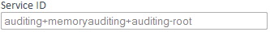

2.0.0-SNAPSHOT "Qualified Q"
Copyright © 2009, 2010, 2011 Austrian Association for Software Tool Integration (AASTI)
- I. Introduction
- II. Tutorials
- 4. HowTo - Setup OpenEngSB for development (First steps)
- 5. HowTo - Extend OpenEngSB Console
- 6. HowTo - First steps with the OpenEngSB (Send mails via the OpenEngSB)
- 7. HowTo - Events with the OpenEngSB (Using the logging service)
- 8. HowTo - Create a connector for an already existing domain for the OpenEngSB
- 8.1. Goal
- 8.2. Time to Complete
- 8.3. Prerequisites
- 8.4. Step 1 - Use the archetype
- 8.5. Step 2 - Add the dependencies
- 8.6. Step 3 - Configure the connector
- 8.7. Step 4 - Implement the connector
- 8.8. Step 5 - Spring Setup and Internationalization
- 8.9. Step 6 - Start the OpenEngSB with your Connector
- 8.10. Step 7 - Test the new connector
- 9. HowTo - Create a Client-Project for the OpenEngSB
- 10. HowTo - Interact with the OPENENGSB Remotely
- 11. HowTo - Combine mulitple connectors
- 12. HowTo - Integrate services with OpenEngSB
- III. OpenEngSB Framework
- 13. Quickstart
- 14. Architecture of the OpenEngSB
- 14.1. OpenEngSB Enterprise Service Bus (ESB)
- 14.2. OpenEngSB Infrastructure
- 14.3. OpenEngSB Components
- 14.4. OpenEngSB Tool Domains
- 14.5. Client Tools (Service Consumer)
- 14.6. Domain Tools (Service Provider)
- 14.7. Domain- and Client Tool Connectors
- 14.8. EDB (Engineering Data Base)
- 14.9. EKB (Engineering Knowledge Base)
- 15. Context Management
- 16. Persistence in the OpenEngSB
- 17. Security in the OpenEngSB
- 18. Workflows
- 19. Taskbox
- 20. Remoting
- 21. External Domains and Connectors
- 22. Deployer services
- 23. Client Projects and Embedding The OpenEngSB
- 24. OpenEngSB Platform
- IV. Administration Console
- V. Administration User Interface
- VI. OpenEngSB Available Domains & Connectors
- VII. OpenEngSB Commiters & Contributors
- 39. Getting Started as a Developer
- 40. How To Create an Internal Connector
- 41. How To Create an Internal Domain
- 42. Prepare and use Non-OSGi Artifacts
- 43. Release and Release Process
- 44. Admin
- 45. Project Roles
- 46. Java Coding Style
- 46.1. Sun Coding Guidelines
- 46.2. General
- 46.2.1. File format
- 46.2.2. Header
- 46.2.3. Duplication
- 46.2.4. Use guards
- 46.2.5. Keep methods short
- 46.2.6. Use enums
- 46.2.7. Avoid use of static members
- 46.2.8. Use fully qualified imports
- 46.2.9. Never declare implementation types
- 46.2.10. SerialVersionUID
- 46.2.11. Restrict scope of suppressed warnings
- 46.2.12. Use String.format()
- 46.2.13. Array declaration style
- 46.2.14. Comments
- 46.3. Naming
- 46.4. No clutter
- 46.5. Exception Handling
- 46.6. Tests
- 46.7. XML Formatting
- 47. Writing Code
- 48. Recommended Eclipse Plug-ins for Developers
- 49. Writing Documentation
This parts provides general information to the project, the document, changelog and similar data which fits neither in the framework description nor in the contributor section.
The target audience of this part are developers, contributors and managers.
Like any open source project we have the problem that writing documentation is a pain and nobody is paid for doing it. In combination with the rapidly changing OpenEngSB source base this will lead to a huge mess within shortest time. To avoid this problem we've introduced regular documentation reviews and, more importantly, the following rules which apply both for writing the document and for reading it.
- The manual is written as short and precise as possible (less text means lesser to read and even lesser to review)
- The manual does not describe how to use an interface but only coarse grained concepts in the OpenEngSB. Since the OpenEngSB is not an end user application, but rather a framework for developers we expect that Javadoc is no problem for them. Writing Javadoc and keep it up to date is still hard for developers, but much easier than maintaining an external document. Therefore, all concepts are explained and linked directly to the very well documented interfaces in the OpenEngSB on Github. To fully understand and use them you'll have to read this manual parallel to the interface documentation in the source code.
In engineering environments a lot of different tools are used. Most of these operate on the same domain, but often interoperability is the limiting factor. For each new project and team member tool integration has to be repeated again. In general, this ends up with numerous point-to-point connectors between tools which are neither stable solutions nor flexible ones.
This is where the Open (Software) Engineering Service Bus (OpenEngSB) comes into play. It simplifies design and implementation of workflows in an engineering team. The engineering team itself (or a process administrator) is able to design workflows between different tools. The entire description process happens on the layer of generic domains instead of specific tool properties. This provides an out of the box solution which allows typical engineering teams to optimize their processes and make their workflows very flexible and easy to change. Also, OpenEngSB simplifies the replacement of individual tools and allows interdepartmental tool integration.
Project management is set to a new level since its possible to clearly guard all integrated tools and workflows. This offers new ways in notifying managers at the right moment and furthermore allows a very general, distanced and objective view on a project.
Although this concept is very powerful it cannot solve every problem. The OpenEngSB is not designed as a general graphical layer over an Enterprise Service Bus (ESB) which allows you to design ALL of your processes out of the box. As long as you work in the designed domains of the OpenEngSB you have a lot of graphical support and other tools available making your work extremely easy. But when leaving the common engineering domains you also leave the core scope of the service bus. OpenEngSB still allows you to connect your own integration projects, use services and react on events, but you have to keep in mind that you're working outside the OpenEngSB and "falling back" to classical Enterprise Application Integration (EAI) patterns and tools.
However, this project does not try to reinvent the wheel. OpenEngSB will not replace the tools already used for your development process, it will integrate them. Our service bus is used to connect the different tools and design a workflow between them, but not to replace them with yet another application. For example, software engineers like us love their tools and will fight desperately if you try to take them away. We like the wheels as they are, but we do not like the way they are put together at the moment.
The OpenEngSB project has several direct purposes which should be explained within this chapter to make clear in which situations the OpenEngSB can be useful for you.
OSGi is a very popular integration environment. Instead of delivering one big product the products get separated into minor parts and deployed within a general envioronment. The problem with this concept is to get old, well known concepts up and running in the new environment. In addition tools such as PAX construct allow a better integration into Apache Maven, and extended OSGi runtimes, such as Karaf allow a richer and easier development. Neverthless, settting up such a system for development means a lot of hard manual work. Using the OpenEngSB such systems can be setup within minutes.
The OpenEngSB introduces a new level of ESB. Development with all typical ESBs mean to start from the ground and develop a complete, own environment, only using existing connectors. Using the OpenEngSB not only connectors but an entire integrated process, workflow and event environment waits for you. In addition connectors to different tools can not only be adapted to the specific needs, but also simply replaced by other connectors, using the Domain concept.
The OpenEngSB delivers a complete management and monitoring environment. While this environment can be added to your project standalone (similar to e.g. Tomcat management console) you also have the possibility to completely integrate the OpenEngSB management enviornment into your Apache Wicket application.
While typical ESB have to be installed seperately from your application the OpenEngSB is delivered with your application. Develop your application in the OpenEngSB environment and scripts to embed your application into the OpenEngSB are provided. In addition easy blending allows to adapt the OpenEngSB visually to your needs and cooperate design.
This part contains tutorials for the OpenEngSB.
This section describes the setup process required for OpenEngSB development.
If you would like to view a use-case centric tutorial take a look at the continuous integration example.
If you are already familiar with Java EE servers about 15 minutes. We will not be using advanced concepts, so you likely be able to continue with the tutorial even without it.
It is assumed you have basic knowledge of system administration and you are able to set up auxiliary software (i.e. JDK 1.6) youself.
First of all the JDK6 should be installed on the system and the JAVA_HOME variable should be set. (Java download).
Also, make sure that the java-command is available in the PATH-variable.
Download the latest OpenEngSB release from here.
Extract the archive, and run the openengsb-script (bin/openengsb.bat on windows, bin/openengsb otherwise). Click the following link to open the web interface in your browser http://localhost:8090/openengsb.You should automatically be directed to a page asking for a login. The default login is "admin" with "password" as password.
If everything works fine you should be welcomed by the following page presenting you the currently installed domains:

OpenEngSB implements it's functionality in so called features. Each feature contains a number of OSGi bundles. While all features are distributed with the OpenEngSB not all of them are installed to speed up the startup. For the next section (First Steps) it is required to install additional features. Therefore open the console in which you've started the OpenEngSB and enter "list" which should output something like:
karaf@root> list
START LEVEL 100 , List Threshold: 50
ID State Blueprint Level Name
[ 42] [Active ] [Created ] [ 60] Apache Karaf :: Shell :: Service Wrapper (2.2
...
[ 116] [Active ] [ ] [ 60] Jackson JSON processor (1.5.3)
[ 117] [Active ] [Created ] [ 60] OpenEngSB :: Core :: Common (1.2.0.SNAPSHOT)
[ 118] [Active ] [Created ] [ 60] OpenEngSB :: Core :: Events (1.2.0.SNAPSHOT)
[ 119] [Active ] [Created ] [ 60] OpenEngSB :: Core :: Persistence Layer (1.2.0
[ 120] [Active ] [Created ] [ 60] OpenEngSB :: Core :: Security (1.2.0.SNAPSHOT
[ 121] [Active ] [Created ] [ 60] OpenEngSB :: Core :: Workflow Engine (1.2.0.S
[ 122] [Active ] [Created ] [ 60] OpenEngSB :: Domains :: Auditing :: Implement
[ 123] [Active ] [Created ] [ 60] OpenEngSB :: Connector :: MemoryAuditing (1.2
[ 124] [Active ] [Created ] [ 60] OpenEngSB :: Domain :: Example (1.2.0.SNAPSHO
[ 125] [Active ] [Created ] [ 60] OpenEngSB :: Connector :: Example (1.2.0.SNAP
[ 126] [Active ] [Created ] [ 60] OpenEngSB :: Core :: Ports :: JMS (1.2.0.SNAP
[ 127] [Active ] [Created ] [ 60] OpenEngSB :: User Interface :: Common (1.2.0.
[ 128] [Active ] [ ] [ 60] OpenEngSB :: User Interface :: Administration
[ 129] [Active ] [Created ] [ 60] OpenEngSB :: Core :: Deployer :: Connector (1
In order to install domains and connectors from other repositories you need to add the corresponding feature-URLs. Note that in order to install a connector you need to install all domains it implements.
Table 4.1. Supported domains
| name | feature-url |
|---|---|
| appointment | mvn:org.openengsb.domain/openengsb-domain-appointment/1.2.1/xml/features |
| build | mvn:org.openengsb.domain/openengsb-domain-build/1.2.1/xml/features |
| contact | mvn:org.openengsb.domain/openengsb-domain-contact/1.2.1/xml/features |
| deploy | mvn:org.openengsb.domain/openengsb-domain-deploy/1.2.1/xml/features |
| issue | mvn:org.openengsb.domain/openengsb-domain-issue/1.2.1/xml/features |
| notification | mvn:org.openengsb.domain/openengsb-domain-notification/1.2.1/xml/features |
| report | mvn:org.openengsb.domain/openengsb-domain-report/1.2.1/xml/features |
| scm | mvn:org.openengsb.domain/openengsb-domain-scm/1.2.1/xml/features |
| test | mvn:org.openengsb.domain/openengsb-domain-test/1.2.1/xml/features |
Table 4.2. Supported connectors
| name | feature-url |
|---|---|
| mvn:org.openengsb.connector/openengsb-connector-email/1.2.1/xml/features | |
| gcalendar | mvn:org.openengsb.connector/openengsb-connector-gcalendar/1.2.1/xml/features |
| gcontacts | mvn:org.openengsb.connector/openengsb-connector-gcontacts/1.2.1/xml/features |
| git | mvn:org.openengsb.connector/openengsb-connector-git/1.2.1/xml/features |
| github | mvn:org.openengsb.connector/openengsb-connector-github/1.2.1/xml/features |
| mvn:org.openengsb.connector/openengsb-connector-email/1.2.1/xml/features | |
| jira | mvn:org.openengsb.connector/openengsb-connector-jira/1.2.1/xml/features |
| maven | mvn:org.openengsb.connector/openengsb-connector-maven/1.2.1/xml/features |
| plaintextreport | mvn:org.openengsb.connector/openengsb-connector-plaintextreport/1.2.1/xml/features |
| promreport | mvn:org.openengsb.connector/openengsb-connector-promreport/1.2.1/xml/features |
| trac | mvn:org.openengsb.connector/openengsb-connector-trac/1.2.1/xml/features |
In order to install a domain first add the feature-repository using the command features:addurl.
When the URL has been added the domain can usually be installed using features:install
root@openengsb>features:addurl mvn:org.openengsb.domain/openengsb-domain-notification/1.2.1/xml/features
root@openengsb>features:install openengsb-domain-notification
Note that domains and connectors are versioned independently of each other and the OpenEngSB. It's possible to run openengsb-domain-issue-1.2.0 with openengsb-connector-jira-1.2.1 inside openengsb-1.3.0.M2
Now that the OpenEngSB is up and running (and all required bundles are installed) start with the first integration tutorial.
To read this tutorial and get add a first command should not take more than 10 minutes
It is not much needed to get the OpenEngSB console started. Just type in a shell "mvn openengsb:provision" or execute the corresponding shell script (etc/scripts/run.sh)
This section describes how to add a new commands. The project is located in core/console. To add a new command not much is needed. For an finished example have a look at the class org.openengsb.core.console.OpenEngSBInfo. Here a short description:
import org.apache.felix.gogo.commands.Command;
import org.apache.karaf.shell.console.OsgiCommandSupport;
@Command(scope = "openengsb", name = "info", description = "Prints out some information")
public class OpenEngSBInfo extends OsgiCommandSupport {
@Override
protected Object doExecute() throws Exception {
System.out.println("Here is the information");
return null;
}
}
There is just one single other step which has to be done: Go into the core/console/src/main/resources/OSGI-INF/bluepring/shell-config.xml and add the following lines:
<command-bundle xmlns="http://karaf.apache.org/xmlns/shell/v1.0.0">
<command name="openengsb/info">
<action class="org.openengsb.core.console.OpenEngSBInfo"/>
OpenEngSBInfo
</command-bundle>
This will lead to following command "openengsb:info". To execute this command, start the OpenengSB console in a shell as described above and type in openengsb:info, this will print out the text "Here is the information"
This section describes a "hello world" use-case for the notification domain using the email connector.
If you are already familiar with setting up services in OpenEngSB about 15 minutes. (see HowTo: Setup
Create a new Email Notification Service by clicking the "New..." link for the Email Notification on the Test Client link.

In the following view you have the possibility to configure the Notification Service. The following screen provides an example for a gmail account. Please use "test1" for the Service Id field.

When you have finished setting all fields to appropriate values, create the new instance by clicking the "Save" button.
Now create another service with the Service Id "test2". Otherwise you can use exactly the same values again.
You can validate the services open the "Services" page, which should look similar to the following screenshot. All your created services should be available with the state "ONLINE".
Now we're going to validate the created services. First of all start by open the "Test Client" link. Now open the "Notification Domain" tree and choose test1. Next get the notify method from the drop down box. The available fields should change instantly. Let the attachment field free and enter anything into message and subject. The address should be a valid email address (not validated for the moment). After all the view should look similar to the following image:
Call the service by using the "Call" button. Some seconds after you've pressed the call button the following message should occur on on your screen:

Within the next seconds to minutes the address, specified by you, should receive a mail.
Next validate if the service test2 does the same. Therefore press on test2, choose notify again and enter your values. Click "Call" again and validate if you receive an email.
Till now you've used the services directly. Now one of the OpenEngSB core concepts is presented: the Domains:
To send messages via domains, instead of directly via the connectors a default receiver for a specific project has to be set. A graphical user inteface for doing so is the "Context Page":

Change the entry "domains/NotificationDomain/defaultConnector/id" to test1 or test2. Do this by clicking on the node (id). This should create a drop down box next to it. Select test1 or test2. Afterwards go back to the "Test Client" page and select "Notification Domain/domains.notification". Now choose the notify method again and try sending a message to yourself.
Again, the call was successful if you receive a message (with the prefix of the notifier you've chosen in the context).
Congratulations, you have just finished the first implementation HowTo of Open Engineering Service Bus.
Now that you've finished the most easy OpenEngSB use case go on with a more complex one: Events
This tutorial shows how the event system in the OpenEngSB can be used. Therefore a log and a domain connector are created and configured. The context system in the OpenEngSB is used to define which connectors should be used and a simple event is used starting a rule.
If you are already familiar with using services in OpenEngSB about 30 minutes. (see HowTo: First steps)
This HowTo assumes you are already familiar with using and configuring services in OpenEngSB.
Now one logging service and one email service should be created. Create one notification service as described in the previous example. Please name it "notification" instead of test1 or test2. Now create a logging service:
Go to the "Context" page and configure the domains to use the connectors created:

On the "Send Event Page" you can create and edit Rules. Therefore they have to be edited directly with a text editor. The initial system is empty and does not include any rules. To create a rule choose "new". Enter "hello1" into the rulename input field. Make also sure that "Rule" is selected in the type dropdown box.
As soon as you edit the content of the rule you can save your changes by clicking "save" or revert the changes by clicking "cancel". The name of the rule will automatically be prefixed with "org.openengsb". Please insert the following content into the text box and save the changes:
#
# My notification rule
#
# Sends "Hello World" notification to test recipient.
#
when
Event(name == "42")
then
example.doSomething("Hello World");
Notification n = new Notification();
n.setSubject("testsubject");
n.setMessage("testMessage");
n.setRecipient("testRecipient");
notification.notify(n);

Basically this rule reacts on all events (when clause). "log" is a helper class using the default log connector of the log domain to write information to a log file. Notification uses the default notification connector to inform a person. More details about this topic can be found in the user documentation at rules, domains and connectors.
To run a test the n.setRecipient property should be changed to a (e.g.) your email address.
Now we can throw an event and see if the rules work correctly. Stay on the "Send Event Page" enter for the contextId field "foo" and press send:
foo represents the name of the project. For a detailed description about projects and the context see the user documentation. You've should received a email via the rule to the email address configured previously). In addition using the "log:display" command in the OpenEngSB console should present (anywhere in the long log) a logging entry similar to the following (you have to search for the output of the LogService. The other fields can change):
This tutorial describes examplary for all connectors the implementation of an email connector. The email connector implements the interface of the Chapter 28, Notification Domain, which is already implemented in the OpenEngSB. Therefore, this tutorial describes the implementation of a connector for an already present domain.
If you are already familiar with the OpenEngSB about 30 minutes. If you are not familiar with the OpenEngSB please read this manual from the start or check the homepage for further information.
Warning: This section is likely to change in the near future, as domains and connectors are currently separated from the rest of the OpenEngSB project. Currently connectors are developed together with the core system.
For information about how to get started as contributor to the OpenEngSB project and how to get the current OpenEngSB source please read the contributor section of the manual: Part VII, “OpenEngSB Commiters & Contributors”.
As the development of a connector is a recurring task the OpenEngSB developer team has prepared
Maven archetypes and useful mojos, which provide support for the initial creation of a connector. A new connector
can be created by invoking mvn openengsb:genConnector (or using
/etc/scripts/gen-connector.sh)
Go into the directory "/connector" and invoke the mojo from there. It generates the result in the directory from where it is started, therefore it is recommended to run it from the "/connector" directory. You can also run it from a different directory and copy the results into the "/connector" directory. Fill in the following values (if no input is provided the default value is kept):
Domain Name (is domainname): notification
Domain Interface (is NotificationDomain):
Connector Name: email
Version (is 1.1.0-SNAPSHOT):
Project Name (is OpenEngSB :: Connector :: Email):
Now the maven archetype is executed. It asks you to confirm the configuration:
groupId: org.openengsb.connector
artifactId: openengsb-connector-email
version: 1.1.0-SNAPSHOT
package: org.openengsb.connector.email
connectorName: Email
connectorNameLC: email
domainArtifactId: openengsb-domain-notification
domainInterface: NotificationDomain
domainPackage: org.openengsb.domain.notification
name: OpenEngSB :: Connector :: Email
Y: : y
A project named "email" is created with the following structure:
email
|
|---pom.xml
|
|---src
|
|---main
|
|---java
| |
| |---org
| |
| |---openengsb
| |
| |---connector
| |
| |---email
| |
| |---EmailServiceManager.java
| |
| |---internal
| |
| |---EmailServiceImpl.java
| |
| |---EmailServiceInstanceFactory.java
|
|---resources
|
|---META-INF
| |
| |---spring
| |
| |---email-context.xml
|
|---OSGI-INF
|
|---l10n
|
|---bundle.properties
|
|---bundle_de.properties
All these artifacts will be covered during the implementation of the connector and explained in step 2 of this tutorial.
Let's start with the dependencies. As the email connector will be based upon the javax mail libraries, we need to include dependencies for the OSGI versions of these artifacts into the pom file located at "/provision/pom.xml". So we add this dependency to the dependencies section:
<dependency>
<groupId>org.apache.servicemix.bundles</groupId>
<artifactId>org.apache.servicemix.bundles.javax.mail</artifactId>
<version>1.4.4</version>
</dependency>
To configure the connector as part of the OpenEngSB two more things are necessary. At first we have to add the connector to the modules section of its parent pom if it is not already present there. If you have run openengsb:genConnector in the "connector" directory this step should have already been performed automatically for you. To check or manually add the entry, open the file "/connector/pom.xml" and add the new connector to the modules section:
... <modules> <module>email</module> ... </modules> ...
The second step is necessary to configure Karaf correctly. Please open the file "/assembly/pom.xml" and add the following line:
...
<profile>
<id>release</id>
...
<deployURLs>
...
scan-bundle:mvn:org.openengsb.connector/openengsb-connector-email/2.0.0-SNAPSHOT,
...
</deployURLs>
...
Now you can run the following command in the root folder of the OpenEngSB to create an eclipse project for the new connector:
mvn openengsb:eclipse
Now import the connector project into Eclipse and implement the email service by implementing the classes EmailServiceImpl.java and EmailServiceInstanceFactory.java. We won't go into detail about the actual mail implementation here, so we encapsulated the mailing functionality in a mail abstraction. While the class EmailServiceImpl is responsible for the realization of the domain interface, the factory is responsible for creating instances of the email service and for publishing the meta data necessary to configure an instance of the email service. These two classes are now explained in detail.
package org.openengsb.connector.email.internal;
import org.openengsb.connector.email.internal.abstraction.MailAbstraction;
import org.openengsb.connector.email.internal.abstraction.MailProperties;
import org.openengsb.core.api.AliveState;
import org.openengsb.domain.notification.NotificationDomain;
import org.openengsb.domain.notification.model.Notification;
import org.osgi.framework.ServiceRegistration;
public class EmailServiceImpl implements NotificationDomain {
private final String id;
private final MailAbstraction mailAbstraction;
private ServiceRegistration serviceRegistration;
private final MailProperties properties;
public EmailServiceImpl(String id, MailAbstraction mailAbstraction) {
this.id = id;
this.mailAbstraction = mailAbstraction;
properties = mailAbstraction.createMailProperties();
}
/**
* Perform the given notification, which defines message, recipient, subject and
* attachments.
*/
@Override
public void notify(Notification notification) {
mailAbstraction.send(properties, notification.getSubject(), notification
.getMessage(), notification.getRecipient());
}
/**
* return the current state of the service,
*
* @see org.openengsb.core.api.AliveState
*/
@Override
public AliveState getAliveState() {
AliveState aliveState = mailAbstraction.getAliveState();
if (aliveState == null) {
return AliveState.OFFLINE;
}
return aliveState;
}
public String getId() {
return id;
}
public ServiceRegistration getServiceRegistration() {
return serviceRegistration;
}
public void setServiceRegistration(ServiceRegistration serviceRegistration) {
this.serviceRegistration = serviceRegistration;
}
public MailProperties getProperties() {
return properties;
}
}
As you can see, without the mail specific stuff the implementation is quite straight forward. Simply implement the domain interface as well as the getAliveState() method, which is used to query to current status of a tool.
package org.openengsb.connector.email.internal;
import java.util.HashMap;
import java.util.Map;
import org.openengsb.connector.email.internal.abstraction.MailAbstraction;
import org.openengsb.core.api.ServiceInstanceFactory;
import org.openengsb.core.api.descriptor.AttributeDefinition;
import org.openengsb.core.api.descriptor.ServiceDescriptor;
import org.openengsb.core.api.validation.MultipleAttributeValidationResult;
import org.openengsb.core.api.validation.MultipleAttributeValidationResultImpl;
import org.openengsb.domain.notification.NotificationDomain;
public class EmailServiceInstanceFactory implements
ServiceInstanceFactory<NotificationDomain, EmailServiceImpl> {
private final MailAbstraction mailAbstraction;
public EmailServiceInstanceFactory(MailAbstraction mailAbstraction) {
this.mailAbstraction = mailAbstraction;
}
private void setAttributesOnNotifier(Map<String, String> attributes,
EmailServiceImpl notifier) {
if (attributes.containsKey("user")) {
notifier.getProperties().setUser(attributes.get("user"));
}
if (attributes.containsKey("password")) {
notifier.getProperties().setPassword(attributes.get("password"));
}
if (attributes.containsKey("prefix")) {
notifier.getProperties().setPrefix(attributes.get("prefix"));
}
if (attributes.containsKey("smtpAuth")) {
notifier.getProperties().setSmtpAuth(Boolean.parseBoolean(attributes.
get("smtpAuth")));
}
if (attributes.containsKey("smtpSender")) {
notifier.getProperties().setSender(attributes.get("smtpSender"));
}
if (attributes.containsKey("smtpHost")) {
notifier.getProperties().setSmtpHost(attributes.get("smtpHost"));
}
if (attributes.containsKey("smtpPort")) {
notifier.getProperties().setSmtpPort(attributes.get("smtpPort"));
}
}
/**
* Called when the {@link #ServiceDescriptor} for the provided service is needed.
*
* The {@code builder} already has the id, service type and implementation type
* set to defaults.
*/
@Override
public ServiceDescriptor getDescriptor(ServiceDescriptor.Builder builder) {
builder.name("email.name").description("email.description");
builder
.attribute(buildAttribute(builder, "user", "username.outputMode",
"username.outputMode.description"))
.attribute(
builder.newAttribute().id("password").name("password.outputMode")
.description("password.outputMode.description").defaultValue("")
.required().asPassword().build())
.attribute(buildAttribute(builder, "prefix", "prefix.outputMode",
"prefix.outputMode.description"))
.attribute(
builder.newAttribute().id("smtpAuth").name("mail.smtp.auth.outputMode")
.description("mail.smtp.auth.outputMode.description")
.defaultValue("false").asBoolean().build())
.attribute(
buildAttribute(builder, "smtpSender", "mail.smtp.sender.outputMode",
"mail.smtp.sender.outputMode.description"))
.attribute(
buildAttribute(builder, "smtpPort", "mail.smtp.port.outputMode",
"mail.smtp.port.outputMode.description"))
.attribute(
buildAttribute(builder, "smtpHost", "mail.smtp.host.outputMode",
"mail.smtp.host.outputMode.description")).build();
return builder.build();
}
private AttributeDefinition buildAttribute(ServiceDescriptor.Builder builder,
String id, String nameId, String descriptionId) {
return builder.newAttribute().id(id).name(nameId).description(descriptionId)
.defaultValue("").required().build();
}
/**
* Called by the {@link AbstractServiceManager} when updated service attributes for
* an instance are available. The attributes may only contain changed values and
* omit previously set attributes.
*
* @param instance the instance to update
* @param attributes the new service settings
*/
@Override
public void updateServiceInstance(EmailServiceImpl instance, Map<String,
String> attributes) {
setAttributesOnNotifier(attributes, instance);
}
/**
* The {@link AbstractServiceManager} calls this method each time a new service
* instance has to be started.
*
* @param id the unique id this service has been assigned.
* @param attributes the initial service settings
*/
@Override
public EmailServiceImpl createServiceInstance(String id,
Map<String, String> attributes) {
EmailServiceImpl notifier = new EmailServiceImpl(id, mailAbstraction);
setAttributesOnNotifier(attributes, notifier);
return notifier;
}
/**
* Validates if the service is correct before updating.
*/
@Override
public MultipleAttributeValidationResult updateValidation(EmailServiceImpl instance,
Map<String, String> attributes) {
return new MultipleAttributeValidationResultImpl(true,
new HashMap<String, String>());
}
/**
* Validates if the attributes are correct before creation.
*/
@Override
public MultipleAttributeValidationResult createValidation(String id,
Map<String, String> attributes) {
return new MultipleAttributeValidationResultImpl(true,
new HashMap<String, String>());
}
}
The factory is more interesting with respect to the OpenEngSB. It is used to create and configure instances of the email service. Furthermore it is responsible for publishing which properties a mail notifier needs to be configured in a proper way. The "getDescriptor" method returns a service descriptor, which is created with the help of a builder. This service descriptor contains the properties a mail notifier needs. In this case things like user password, smtp server and so on. The "updateServiceInstance" method updates an already created instance of the mail service. Basically this means setting the properties, which are provided in the attributes map parameter (see "setAttributesOnNotifier" method). The "createServiceInstance" method is responsible for the creation of a new email service. The methods "updateValidation" and "createValidation" are used to check properties before "updateServiceInstance" or "createServiceInstance" are called. As the mail service does not want to check properties beforehand it simply returns that all values are OK.
The Maven archetype already created the spring setup for the email service at src/main/resources/META-INF/spring. If properties or constructor arguments are needed for the service factory, they have to be defined in the spring setup here. In our case the mail abstraction has to be injected as constructor argument on the creation of the email service factory.
With regards to internationalization it is necessary to add a name and a description for each property used in the service descriptor (see email service factory). The properties files for English and German are also already created by the Maven archetype and can be found at "src/main/resources/OSGI-INF/l10n/". In our case the bundle.properties file contains the following entries:
email.name=Email Notification
email.description=This is a Email Notification Service
username.outputMode = Username
username.outputMode.description = Specifies the username of the email account
password.outputMode = Password
password.outputMode.description = Password of the specified user
prefix.outputMode = Prefix
prefix.outputMode.description = Subject prefix for all mails sent by this connector
mail.smtp.auth.outputMode = Authentification
mail.smtp.auth.outputMode.description = Specifies if the smtp authentication is on or off
mail.smtp.sender.outputMode = Sender Emailadress
mail.smtp.sender.outputMode.description = Specifies the Emailadress of the sender
mail.smtp.port.outputMode = SMTP Port
mail.smtp.port.outputMode.description = Specifies the Port for the smtp connection
mail.smtp.host.outputMode = SMTP Host
mail.smtp.host.outputMode.description = Specifies the SMTP Hostname
As you can see each property is defined with name and description. The same entries can be found in the German properties file (bundle_de.properties) with German names and descriptions.
After implementing and testing your connector locally you can try to start up the OpenEngSB with your new connector. Enter the following commands in the root directory of the OpenEngSB to build and start the OpenEngSB in development mode:
mvn clean install
mvn openengsb:provision
Now you can enter "list" into the karaf console to check whether your new connector was installed and started.
Now you can use the OpenEngSB administration WebApp (available at http://localhost:8090/openengsb) to test your new connector. For more information about how to use the WebApp see the How-to section} of the the OpenEngSB homepage.
If you are already familiar with the OpenEngSB about 30 minutes (This includes only the setup for the project). If you are not familiar with the OpenEngSB please read this manual from the start or check the homepage for further information.
You need to have following tools to be installed
First of all the JDK6 should be installed on the system and the JAVA_HOME variable should be set. (Java download). Also, make sure that the java-command is available in the PATH-variable
You will also need Maven 3 be installed on your system. (Maven download) Also, make sure that the maven-command is available in the PATH-variable
The OpenEngSB provides an maven archetype to create a client project. To use it go into your target directory and type in a shell:
mvn openengsb:genClientProjectRootThe script generates the result in the directory from where it was started
You will be asked to fill out following values (if no input is provided the default value is kept):
Project Group Id [org.openengsb.client-project]:
Project Artifact Id [openengsb-client-project]:
Project Name [Client-Poject]:
Project Version [1.0.0-SNAPSHOT]:
Project Description [This is a client project for the OpenEngSB]:
Project Url [http://www.openenbsb.org]:
OpenEngSB version [1.2.0-SNAPSHOT]:
OpenEngSB maven plugin Version [1.4.0-SNAPSHOT]:
Plugin Assembly version [2.2-beta-5]:You will be asked what the groupId, artifactId and a name of your client project should look like. You can also specify the OpenEngSB version you want to use, but it is recommended to use an up-to-date version. To check the current OpenEngSB version have a look at the Download section. It asks you to confirm the configuration and will create the project.
If everything worked as expected you will get a client project having following structure:
.
`-- openengsb-client-project
|-- assembly
| |-- pom.xml
| `-- src
| `-- main
| |-- descriptors
| | `-- bin.xml
| `-- filtered-resources
| |-- etc
| | `-- org.apache.karaf.features.cfg
| |-- features.xml
| `-- README.txt
|-- core
| `-- pom.xml
|-- docs
| |-- homepage
| | |-- pom.xml
| | `-- src
| | `-- site
| | `-- ...
| |-- manual
| | |-- pom.xml
| | `-- src
| | `-- ...
| `-- pom.xml
|-- LICENSE
|-- poms
| |-- compiled
| | `-- pom.xml
| |-- nonosgi
| | `-- pom.xml
| |-- pom.xml
| `-- wrapped
| `-- pom.xml
|-- pom.xml
`-- README.mdYou can find further information about these modules in the OpenEngSB-Manual
To install features to the project have a look at the file org.apache.karaf.features.cfg in assembly/src/main/filtered-resource/etc. Here you can define features to be registered by default or which feature should be installed on startup. To install your own features see the file features.xml in assembly/src/main/filtered-resource. E.G.: You want to add a module called clientproject-ui the core features add this to the features.xml
<bundle>mvn:org.openengsb.clientproject.ui/clientproject-ui-web$\{project.version\}/war</bundle>To start the client-project, go to the command-window and type
mvn clean install openengsb:provision
Now you can enter "list" into the karaf console to check what features are installed and running
The current JMS Connector allows for internal method calls being redirected via JMS as well as internal services being called.
For resources regarding JMS please take a look at the according Wikipedia Page and for specific language bindings take a look at ActiveMQ
Whenever now a method is sent through the JMS Port the call is marshalled and sent via JMS to a queue named "receive"". The marshalling is done via JSON. The mapping has the parameters methodName, args, classes, metadata and potentially answer and callId. methodName gives the name of the method to call. Args are the serialised parameters of the method. classes are the types of the arguments. This way it is easy to unmarshall the args into the appropriate classes. metadata is a simple Map which stores key value pairs. answer can simply be yes or no and denotes if the methodcall wants an answer to the call. callId gives the return queue the caller will listen to for an answer.
An answer can have the type, arg, className and metaData properties. type can be Object, Exception or Void. arg is the serialised form of the return argument. className is the runtime class of the arg for deserialisation. metadata is a simple key value store.
This section will give a short introduction how to instantiate a proxy and call an external connector
First you have to go to the TestClient to instantiate a new Proxy. Select the Domain you want to have proxied and click New Proxy for that Domain.

Then you have to set the correct values for the proxy properties. The Service Id is a unique value that identifies the proxy in the OPENENGSB system. The Port Id defines to Port to be used for sending the request. "jms-json" is a currently supported Port that sends the request via a json encoded JMS message. The destination describes the endpoint the message should be sent to. When using jms-json the domain and port of the JMS provider have to be set. When calling a remote connector the unique id of the remote service or connector has to be provided. This way the remote service can identify, load and call a certain service. If the call is not intended to go to another OPENENGSB, or the external service needs no identification of the service to call the remote service id can be ommited.

After saving the proxy you should be able to test it via the TestClient page. Following is an example of an unsecure call:
{
"authenticationData": {
"className":"org.openengsb.core.api.security.model.UsernamePasswordAuthenticationInfo",
"data": {
"username":"admin",
"password":"password"
}
},
"timestamp":42,
"message": {
"callId":"xyz",
"answer":true,
"methodCall": {
"classes": [
"java.lang.String",
"org.openengsb.core.api.workflow.model.ProcessBag"
],
"methodName": "executeWorkflow",
"metaData": {
"serviceFilter": "(objectClass=org.openengsb.core.api.workflow.WorkflowService)",
"contextId": "foo"
},
"args": [
"simpleFlow",
{
}
]
}
}
}IF you would like to use security instead you should prefer the following call:
{
{
"encryptedContent":"encodedMessage", // Base 64 and encryped string of the message above
"encryptedKey":"encodedKey" // The encoded key
}

When proxying connector calls you have to provide an answer to every call, as the system blocks until it gets an answer. You have to send a JSON message containing a type string parameter, which can be Object, Exception or Void depending on the return argument of the method, arg where you simply serialise the Return Object, so it can be deserialised into the correct object later and className which gives the exact class that has to be used for deserialisation. The request contains a parameter callId which is the name of the queue the answer has to be sent to.
{"type":"Object","className":"org.openengsb.core.ports.jms.JMSPortTest$TestClass",
"metaData":{"test":"test"},"arg":{"test":"test"}}Whenever a call to this proxy is then made a new JMS message will be sent to the "receive" queue on the destination you entered. The exact make up of the message was already described. When implementing an external connector it is best to test the call you want to receive first via the TestClient, so you get the exact message that you will have to work with.
Please always keep in mind security. By default security is turned on. If you want to turn it off please
take a look into the etc/system.properties file. While using no security for testing is very
interesting we would not advise you to send unencrypted messages in a production environment.
To call an internal Service send a methodcall as described before to the "receive" queue on the server you want to call. The service works exactly as defined before. There currently are two ways of specifying which service to address.
- serviceId: This will call the service that was exported with the specified "id"-property. It
behaves like the following Filter in OSGi-syntax:
(id=<serviceId>) - serviceFilter: This way you can specify any filter in OSGi-syntax to adress the service, so it is
not necessary to bind the client to a specific id, but to other properties as well (e.g.
location.root,location.<context>,objectClass, ...)
You can also use both attributes (serviceId and serviceFilter). It will create a filter matching both constraints.
Example: if you want to execute a workflow via the WorkflowService send
{"callId":"12345","answer":true,"classes":["java.lang.String",
"org.openengsb.core.api.workflow.model.ProcessBag"],
"methodName":"executeWorkflow","metaData":{"serviceId":"workflowService",
"contextId":"foo"},"args":["simpleFlow", {}]}Please be aware that the flow the above method tries to call (simpleFlow) is not available by default on the OpenEngSB. To make sure that there's a flow you can call install the flow in the OpenEngSB. Therefore start the OpenEngSB and go to the SendEventPage. There choose to create a new process and press new. Now enter simpleFlow as processname and past the following process:
<process xs:schemaLocation="http://drools.org/drools-5.0/process
drools-processes-5.0.xsd" type="RuleFlow" name="simpleFlow" id="simpleFlow"
package-name="org.openengsb" xmlns="http://drools.org/drools-5.0/process"
xmlns:xs="http://www.w3.org/2001/XMLSchema-instance">
<header>
<variables>
<variable name="processBag">
<type name="org.drools.process.core.datatype.impl.type.ObjectDataType"
className="org.openengsb.core.api.workflow.model.ProcessBag"/>
</variable>
</variables>
</header>
<nodes>
<start id="1" name="Start" x="16" y="16" width="91" height="48"/>
<end id="2" name="End" x="21" y="168" width="80" height="40"/>
<actionNode id="3" name="Action" x="21" y="96" width="80" height="40">
<action type="expression" dialect="mvel">
processBag.addProperty("test", 42);
processBag.addProperty("alternativeName", "The answer to life the universe and everything");
</action>
</actionNode>
</nodes>
<connections>
<connection from="3" to="2"/>
<connection from="1" to="3"/>
</connections>
</process>After pressing save you can access the process via the message shown above.
to the receive queue on the OPENENGSB JMS Port which is started by default on Port 6549. Make sure that classes and args has the same number of arguments. If you just want an object to be instantiated, but have no corresponding values that should be set for the object simply add {} (as in the example above) which will instantiate the object but recognize, that no values have to be set on the object. {"name" : "SomeName"} would on the other hand call the setName method with SomeName.
The response to the above message will be returned on a queue you've pasted via the callId field.
We provide examples in different languages how to connect to the OpenEngSB. The examples are grouped according to language and the documentation to the different examples are directly done in the code of the examples. We try to keep those examples as good as possible up-to-date, but do not gurantee that they all work as expected since we can't add them to our integration tests. If you want to provide examples in different languages you're always welcomed to provide them.
To test the OPENENGSB JMS implementation with Python please follow the instructions
The example can be downloaded here
The CSharp connector is written on basis of the Apache ActiveMQ JMS connector. There an EngSB.sln file. This project file has been developed with SharpDevelop 4, but is also tested with VisualStudio 2008 CSharp Express Edition with the .Net Framework 4.
The example can be downloaded here
As shown in this example you can connect to the OpenEngSB in a similar way as with Python or CSharp.
The example can be downloaded here
Basically there is nothing special to do to get up a service. Still, since java has no static type information
there is no possibility to marshal things like a java.util.List of options. The fix we've introduced
for this problem is to annotate parameters and define a custom marshaller. Therefore create a class with a default
constructor extending CustomJsonMarshaller. Then annotate the parameter of the implementations you're using with
the UseCustomJasonMarshaller annotation adding the Marshaller class. That's it. The framework will automatically
create the mapper and call the transform method for you.
Since there is an issue right now with Aries Proxies hiding parameter annotations the CustomMarshallerRealTypeAccess interface provides a workaround for the problem. In case this interface is found the class provided by it is used for searching. Otherwise the class directly is scanned.
It is possible to combine several connector-instances to one parent connector that appears to workflows like any other connector. For example you may want to have several notification-connectors in a workflow. It uses the location-placeholder "foo". So when the workflow expects the connector-instance at location "foo", you may want it to call multiple connectors. One would expect that simply assigning the location "foo" to every connector would create this behaviour, but it doesn't. By default, the connector with the highest service ranking is chosen (see OSGi-core-specification section 5.5.5).
There are also other issues with using multiple service in a place where one single service is expected:
- Should the services be called concurrently or sequentially?
- Which service should be called first?
- What should be returned as a result?
All this is specified by a CompositeStrategy. Strategy-implementations must implement the CompositeConnectorStrategy interface and be registerd as OSGi-services exporting this interface. Also the service must specify the "composite.strategy.name" property. The strategy is provided with a list of ServiceReferences, and the invocation parameters. The implementation can decide which services to resolve and to invoke. Also the strategy must return a single result.
A composite connector instance can be created like a regular connector-instance. You need to supply the following attributes:
- querystring: a string representing an OSGi-query. All services that match this query are passed on
to the strategy as ServiceReferences.
Example: Suppose we have two notification services. One has the property
location.foo=notification/1and the other one haslocation.foo=notification/2. A possible query-string for the composite-service could be(location.foo=notification/*). - composite-strategy-name: The name of the strategy that should be used.
The service integration tutorial shows how to combine and automate different software tools, services and applications with OpenEngSB. To show OpenEngSB's versatility the use case we will be implementing is a continuous integration (CI) tool for software development processes. The tutorial takes a straight forward approach favoring visible results over architectural details of tool integration. Whether or not you have experience with CI, bear with the tutorial for a moment and you will see how simple it works out.
Before we get started let us lay out the idea of our CI tool and create a step-by-step development plan. The practice of continuous integration aims at improving software quality by frequent (automated) building and testing of a project's source base and by reporting back to the developers. The CI tool must be able to access the source repository, build the project, test the binaries and reports to the developers. And there we have a basic four step plan:
(1) Repository access
(2) Building source
(3) Testing binaries
(4) Notification process
If you would like to take a look at a fully functional CI server built on OpenEngSB check out OpenCIT. It implements a wider range of features, but it's a great reference.
If you are already familiar with the OpenEngSB about 30 minutes. If you are not familiar with the OpenEngSB please read this manual from the start or check the homepage for further information.
It is assumed you have basic knowledge of software development practices and you are able to set up auxiliary software (i.e. JDK 1.6) youself.
Warning: This section is likely to change in the near future, as the web UI as well as domains and connectors are subject to change.

Getting OpenEngSB is simple. Go to openengsb.org, download the latest stable version to your computer and unpack the archive to a convenient location. Before you fire up OpenEngSB for the first time, please make sure you have a Java Development Kit 1.6+ available and set up.

You can startup OpenEngSB via the openengsb script in the "bin" folder. If you want to explore the web interface yourself before digging into implementing the CI use case, open up your web browser and navigate to http://localhost:8090/openengsb and log on as "admin" with password "password".

If you want to take a break or shutdown OpenEngSB in the middle of the tutorial, go ahead and do not worry. All changes made so far are saved and restored upon restart, so you can continue working with the most up-to-date state. Use the shutdown command in OpenEngSB's management console to stop any running services.
It turns out, we actually need a sample project before we can start developing and testing our CI tool. In this tutorial we will be using Apache Maven for project and source management and a small Hello World application written in Java. For this to work flawlessly we need JDK 1.6+ (download) and Maven 3+ (download) to be set up on the computer.

You may download and extract the openengsb-tutorial (download) project that works out of the box or set up your own sample project via maven archetypes. Put the project files in a memorable location (i.e. "/home/user/Desktop/openengsb-tutorial" or "C:\users\user\desktop\openengsb-tutorial") and that's about it for now.
You could certainly build the project using Maven, but we want this to happen from within OpenEngSB. Open up your browser and go to the web interface at http://localhost:8090/openengsb. Authenticate using the Login link as "admin" with password "password".
Switch to the Test client tab and check whether the build domain is available to accept commands.
As the build domain is not shown, we will need to go to OpenEngSB's console. Use the "features:install openengsb-connector-maven" command to load the tool connector for Apache Maven. The tool connector allows OpenEngSB to communicate with an external service or application, Maven in this case. By loading the connector OpenEngSB also loads the domains associated with the connector. A domain is a generic interface that is implemented by specific connectors. For example, the build domain offers a generic function to build a software project. Whether this is done by Apache Maven, an Ant script or a plain compiler depends on the connector chosen by the user, but does not affect the basic model of our CI tool that simply "builds" the source. Using this technique specific tools can be exchanged quickly and transparently while data-flow and process models are completely unaffected.
Now let us return to the web interface. After a page refresh we are able to create a new Maven connector instance by following the new link next to the connector description.

The service id is an arbitrary name that can be referred to later on, i.e. builder. The project path refers to the local copy of the source repository, i.e. "/home/user/Desktop/openengsb-tutorial". Finally, the maven command is the command line option handed to Apache Maven, i.e. "clean build". Whenever the connector is ordered to build the project it will now execute "mvn clean compile" in the project directory of openengsb-tutorial. Click save to create the connector instance.

It is time for some action. Scroll down all the way in the Test Client tab, navigate to the BuildDomain in the tree view and click the builder service. From the drop down menu below select build() and click the "Call" button. When the project is built successfully a "Method called successfully" message appears.

Let us check the directory of openengsb-tutorial to find the newly created target directory. Using a console we can navigate to the classes sub-folder and run "java org.openengsb.Main". It returns "Hello World!". Congratulations, you have just implemented the core functionality of our CI tool.
In case an error message is returned, we need to check the connector configuration. Please make sure that Maven is able to build the project by manually executing "mvn clean build" in the project directory of openengsb-tutorial. If this does not work out, most likely the setup of either Maven or JDK are incorrect. If it works however, please check the configuration of the connector by navigating to the builder service in the web interface again and clicking the "Edit Service" button.
The next step in building the CI tool is implementation of automated testing. We can use the test domain to achieve this. Conveniently, the Maven connector also exports this type of functionality and we do not to load any additional features in the management console.

Use the Test client tab and create a new instance of the Maven connector for the "test" domain. It works the same way as before. The Service Id is an arbitrary name, i.e. tester. The project path points at the location of openengsb-tutorial's base directory, i.e. "/home/user/Desktop/openengsb-tutorial", and the maven command indicates the command line arguments passed to Maven, i.e. "test". Click save to create the connector instance.

We are also going to test the newly created connector. Use the tree view at the bottom of the page to navigate to TestDomain and select the tester service. In the drop down box below choose runTests() and click the "Call" button. If the "method called successfully" message is returned, the Maven connector ran the rigorous unit tests on our sample application and they were passed with flying colors.

In case you are wondering about the output of the test suite go to the Send Event page. There you will find an audit list of all events processed by OpenEngSB and their corresponding payload, i.e. the output of the test run. The list behaves like a log file with most recent events appended to the bottom. In OpenEngSB any input from connectors is processed by domains and packaged in form of events. Every time an event is raised it can be matched by a rule in a central rule-base and cause a reaction of the system possibly invoking different domains or spawning additional events. By editing the rule-base we become able to link different actions together. Depending on the outcome of an action, we may receive different events, i.e. build success or build failure. By creating separate rules for each case we can react accordingly and by chaining multiple actions and events we could create a longer decision tree or process model.
In the final step we link the build and test stages together and add functionality to output results of the process. For this purpose we will create a small number of rules that react to events generated by the build and test stage. To keep things simple we do not add further connectors and assume that the build process is started by calling the builder's "build()" method in the Test client web UI.
We are going to write the results of the build and test stage to the management console of OpenEngSB. We will notify about the build starting and its outcome. Also, in case the build works out successfully we will automatically start the test process. Hence, we need rules matching "BuildStartEvent" and "BuildSuccessEvent" that write output to the console and potentially activate the test connector.
The easiest way to edit the rule-base of our OpenEngSB instance is the editor area at the bottom of the Send Event page. You can find event types and names by checking the event log displayed on the page and create rules manually in the editor below. The rules are written in plain text, based on Drools (documentation) and Java standards. They are quickly understood, just take a look at the auditEvent rule used to generate the event log displayed on top of the page. You can display the rule by choosing "Rule" in the left-most drop-down box and "org.openengsb.auditEvent" in the second one. The text editor now shows that there is a when section that acts as filter for incoming events and there is a then section that describes the actions to be taken in case of a match.
Let us start out and create our own rule. We will inform the user via console when a build process starts. Click the new button next to the drop-down boxes, enter a name for the newly created rule, i.e. "buildStarted", and save it. After selecting the rule in the drop-down box the text editor actually shows the same content as for the audit event. Do not be confused, it's the default template. You can start editing right away. Note: Writing output directly to the console without using a logger service is considered bad practice. Yet, it's simple and sufficient for demonstration purposes.
when
Event(type == "BuildStartEvent")
then
System.out.println("Build started");
This rule matches "BuildStartEvent" and prints a line to the console window. Click save to prepare the rule for testing. Switch to the Test client tab, select the builder and call the "build()" method. If things work out, you'll instantly see the "Build started" notification pop up in the management console.
It's time to push this further. Create another rule, i.e. "buildSuccessful" and edit it to look like this:
when
Event(type == "BuildSuccessfulEvent")
then
System.out.println("Build successful, running tests");
tester.runTests();
Note: as of OpenEngSB 1.1.2 there is a bug in the editor that prevents connector invocations ("connectorId.doSomething()") from working correctly.

The rule also matches "BuildSuccessEvent" and prints a line to the console window. In addition, however, it calls a method provided by the test connector. Remember the "runTests()" method you called in the tester service by using the test client before? This has exactly the same effect but replaces manual UI interaction with an automated response. Click save and kick off another build using the Test client again. There you go: "Build started" and "Build successful, running tests".
Congratulations, you have created a basic CI tool! The foundations have been extended to allow for easy auditing and extensibility. Of course, at the moment it simply replicates the functionality of existing CI tools, but it can be easily extended using SCM access, reporting and notification tools and work together with project management software and PIM applications. Take a look on the long list of available domains and tool connectors.
If you want to do some more practice you can add more rules, i.e. for "TestSuccessEvent" or "BuildFailureEvent". You can find event types, names and properties by checking the event log displayed on the Send Event page.
There are a number of different HowTo's and tutorials in the online documentation. They describe different scenarios for setup, connectors and domains and event processing. Also, the user manual contains additional information about the topics discussed and numerous OpenEngSB subprojects, i.e. OpenCIT and OpenTicket, can be used for reference.
This part gives an introduction into the OpenEngSB project and explains its base usage environment and the concepts, such as Domains, Connectors, Workflows and similar important ideas. Furthermore this part covers installation, configuration and usage of the administration interface to implement a tool environment according to your needs.
The target audience of this part are developers and contributors.
As a developer you have basically two ways in which you can use the OpenEngSB. One option is to use the OpenEngSB as a runtime environment for any project. In addition you've the possibility to write Plug-Ins (Domains, Connectors, ...) for the OpenEngSB. Both cases are explained in this chapter.
To create a new Domain run mvn openengsb:genDomain
(or use ../etc/scripts/gen-domain.sh)
in the domain folder.
You will be asked for the name of your domain. Enter the domain name starting with a lower case letter.
For the other questions valid defaults are given.
The new domain project will be added as a submodule. You eventually want to run mvn openengsb:eclipse and import the new project in eclipse.
Add the methods your domain supplies to the domain interface. If your domain raises any events add methods like
void raiseEvent(YourEvent event);
(your event class subtype of Event as single parameter) to the events interface.
To create a new Connector run mvn openengsb:genConnector
(or use ../etc/scripts/gen-connector.sh) in the connector folder.
You will be asked for the name of the domain you want to implement. Enter the domain name starting with a lower case letter.
You may adapt the name of the implemented domain interface if you it does not match the naming convention.
Supply the name of the connector staring with a lower case letter.
The new domain project will be added as a submodule. You eventually want to run mvn openengsb:eclipse and import the new project in eclipse.
Implement the domain interface in the supplied class (unfortunately no method stubs are generated).
Unimplemented domain methods should always throw an exception rather than return default value or do nothing. Therefore each domain method without body must throw DomainMethodNotImplementedException to indicate that requested domain functionality is not implemented.
@Override
public void foo() {
throw new DomainMethodNotImplementedException();
}
The ServiceFactory has to supply a ServiceDescriptor that contains all attributes needed to instanciate the Connector. In the methods createServiceInstance and updateServiceInstance use the provided attributes to create a new new instance or update your Connector. The methods updateValidation and createValidation should do the same but try to validate the provided attributes first and return a validation result.
The generated ServiceManager usually does not have to be changed.
This chapter tries to give a short summary of the most important concepts in the OpenEngSB architecture.
The following graphic shows the architecture of the OpenEngSB. In the center we use a bus system to integrate different modules. In this case we do not use a classical Enterprise Service Bus (ESB), but rather the OSGi service infrastructure via Spring-DM (Section 14.1, “OpenEngSB Enterprise Service Bus (ESB)”). We are using Apache Karaf as the OSGi environment. Karaf is used in this case, instead of a most basic OSGi environment, such as Apache Felix or Eclipse Equinox , because it supports us with additional features as extended console support and the feature definitions. This base infrastructure, including all modifications required for the OpenEngSB is called the Section 14.2, “OpenEngSB Infrastructure”. Within the OpenEngSB Infrastructure so called Section 14.3, “OpenEngSB Components” and Section 14.4, “OpenEngSB Tool Domains” are installed. Both types are written in a JVM compatible language, including OSGi configuration files to run in the OpenEngSB Infrastructure. They are explained later within this chapter. Different tools running outside the OpenEngSB Infrastructure are called Section 14.5, “Client Tools (Service Consumer)” or Section 14.6, “Domain Tools (Service Provider)”, depending on their usage scenario. To integrate and use them within the OpenEngSB so called Section 14.7, “Domain- and Client Tool Connectors” are used. All of these concepts are explained within the next sections.

Technical view of the OpenEngSB highlighting the most important concepts of the integration system
One of the principal concepts for the OpenEngSB development is (if possible) to use already existing and proven solutions rather than inventing new ones. In this manner the OpenEngSB is an extension to the ESB concept. Typical ESBs such as Apache Servicemix or other JBI or ESB implementations always have the feeling to be huge and bloated. Complex integration patterns, messaging, huge configuration files and similar concepts/problems lead to this feeling. And those feelings are right. They are bloated. The OpenEngsB tries a different approach. Using Karaf as its base framework the environment is VERY lightweight. Depending on your use case you can use different configurations and packages out of the box.
While Apache Karaf provides a rich environment and functionality we're not done with it. Via the Spring-DM extension mechanism, AOP and the OSGi listener model the OpenEngSB directly extends the environment to provide own commands for the console, fine grained security and a full grown workflow model. These extensions are optional and not required if you want to use the platform alone. Add or remove them as required for your use case.
These libraries are the OpenEngSB core. The core is responsible to provide the OpenEngSB infrastructure as well as general services such as persistence, security and workflows. To provide best integration most of these components are tied to the OpenEngSB ESB environment. Nevertheless, feel free to add or remove them as required for your use case.
Although each tool provider gives a personal touch to its product their design is driven by a specific purpose. For example, there are many different issue trackers available, each having its own advantages and disadvantages, but all of them can create issues, assign and delete them. Tool Domains are based on this idea and distill the common functionality for such a group of tools into one Tool Domain interface (and component). Tool domains could be compared best to the concept of abstract classes in in object orientated programming languages. Similar to these, they can contain code, workflows, additional logic and data, but they are useless without a concrete implementation. Together with the ESB, the OpenEngSB infrastructure and the core components the tool domains finally result in the OpenEngSB.
Client Tools in the OpenEngSB concept are tools which do not provide any services, but consume services provided by Tool Domains and Core Components instead. A classical example from software engineering for a client tool is the Integrated Development Environment (IDE). Developer prefer to have the entire development environment, reaching from the tickets for a project to its build results, at hand. On the other hand they do not need to provide any services.
Domain Tools (Service Provider) Domain Tools, compared to Client Tools, denote the other extreme of only providing services. Classically, single purpose server tools, like issue tracker or chat server, match the category of Domain Tools best. Most tools in (software+) engineering environments fit of course in both categories, but since there are significant technically differences between them they are described as two different component types.
Tool Connectors connect tools to the OpenEngSB environment. They implement the respective Tool Domain interface. As Client Tool Connectors they provide a Client Tool with an access to the OpenEngSB services. Again, Domain- and Client Tool Connectors are mostly mixed up but separated because of their technical differences. Additionally it is worth mentioning that tools can be integrated with more than one connector. This allows one tool to act in many different domains. Apache Maven is an example for such multi-purpose tools, relevant for build, as well as test and deploy of Java projects.
The EDB is a database with additional versioning feature. Its main job is to save and version so called tool data. Tool data are information units which are used by tools which are connect to the OpenEngSB. The versioning feature is necessary because it should be possible to restore tool data which has been changed in the meantime. Easiest example for this is the handling of signals.
Signals are little information units which can for example describe a circuit on a board. This circuits are once planned and building the base for workers which works at another layer (e.g. programmer). If this signals are changed and the other layers didn't notice that, the final product won't work or even worse. With the EDB it is possible to get noticed if a signal has changed and you can check what has been changed.
The connection between the tools and the EDB is done through the EngineeringDatabaseService provided by the core/edb bundle. This service gets a datasource (database) from the infrastructure/jpa bundle. The EngineeringDatabaseService is implemented with JPA, that means that every database which support JPA can be used as database backend for the EDB. As standard database backend was the H2 database chosen.
You have also the possibility to replace the database backend used for the EDB. A reason for this could be that your company wants a more performant database because the sets of tooldata are so big that the standard database isn't fast enough. For exchanging the database backend there are two cases: You want to replace the database with another database which is supported by openjpa or you take another database which isn't supported by openjpa. (List of supported databases can be checked here)
If you want to replace the standard database with another openjpa supported database, the procedure of changing is rather simple. You have to change the properties for the database connection of the infrastructure/jpa bundle. This is done by changing the config file "org.openengsb.infrastructure.jpa.cfg". This file is in the "assembly/src/main/filtered-resources/etc" folder. This file has following entries:
driverClassName=[here shall be the name of your driver class name,
example: org.h2.jdbcx.JdbcDataSource]
url=[here shall be the url to the used database file, example: jdbc:h2:openengsb]
username=[here shall be the username for authentication at the database]
password=[here shall be the password for authentication at the database]
After changing of this file, you have to assure that the driver which shall be used by the datasource is loaded at runtime. For that you have to load the database driver before the connection to the database is established. Your database bundle dependency should be added to the poms/pom.xml file. A dependency entry for the h2 database looks like this (the h2.version is defined as property in the same file. Info: had to alter the brackets so that they can be shown here. Also there should be a dollar sign before the {h2.version} part):
[dependency]
[groupId]com.h2database[/groupId]
[artifactId]h2[/artifactId]
[version]{h2.version}[/version]
[/dependency]
If you made sure the dependency is entered, you have to make sure the database is loaded before the database connection is established. For that just replace following code line in the file "assembly/src/main/filtered-resources/features.xml" with the new database driver bundle (as you can see you only have to copy and paste the values of the dependency):
[bundle]mvn:com.h2database/h2/{h2.version}[/bundle]
And thats all you have to do.
If you want to replace the standard database with another non openjpa supported database you will have to change first the datasource like descriped in the last paragraph. After that you have to write another bundle that provides the EngineeringDatabaseService. In this case you also have to reproduce all SQL commands and port it for the new database and replace the standard EngineeringDatabaseService.
Last but not least a few words about the working with the EDB. If you have models that shall be versioned by the EDB, the easiest way is to build this models as interfaces and let them extend the interface OpenEngSBModel. Such an interface can only contain getter and setter methods, since this interfaces can now be proxied through the EngineeringKnowledgeBase (EKB). As soon as you have done this, you are able to send such models with an event from a connector (Method for that is called "sendEDBEvent" and is accessable from every connector that AbstractOpenEngSBConnectorService extends, which shall be done by all connector implementations.
If your domain model requires sub models (like location for a contact), you have also to make this sub model an interface and let it extend OpenEngSBModel interface. In that way, the EDB is able to save all sub models if you save the root model. It is even possible to give a model a list of submodels, the EDB is able to handle that too and you have nothing else to do.
The Engineering Knowledge Base (as it is now) is the partner of the EDB. The EKB enables two important features:load models from the EDB and generate proxies for domain models.
The first feature importance is quite clear. The EKB enables to load the models which are collected by the EDB. It's main work for that feature is to retrieve the model in a rare form from the EDB (in a only EDB readable format) and convert this rare form to the domain model the user requested.
The second feature makes it possible to simulate implementations of domain models. Like already mentioned in the EDB part, every domain model only consists of getter and setter pairs and extends the OpenEngSBModel interface. If you let the EKB proxy such models, your work you have to do to communicate with the EDB and versionize models is minimized. Also the EKB proxies does the whole converting work from the models to EDB readable format for you.
The context is one of the most important core concepts of the openengsb. It allows to reuse predefined workflows in several contexts. A context may often represent a project or subproject. So it is possible to execute the same workflow with the project-specific tool-instances and other metadata (like contact-information).
To determine in which context an action should be executed a thread-local variable is used. The ContextHolder keeps track of this variable (the current threads' context). Invoking the set- and get-method will always manipulate the context of the current Thread. When a new Thread is spawned it inherits the context from the parent thread.
Attention: When using Theadpools, the ContextHolder may malfunction (i.e. return the context of some previous task that was run in the same thread). Use
ThreadLocalUtil.contextAwareExecutor(ExecutorService)
to convert any executor to a context-aware one. ExecutorServices returned by this method ensure that the submitted tasks are executed in the same context as the thread they were submitted from.
This way connector-implementations and other client projects always can handle actions according to the current context, and execute actions in specific a specific context. So when a person with a certain role in the project (e.g. project manager) needs to be notified of some event, the value of his contact-address is specific to the context of the project(s) he is managing.
The context is also used to handle the wiring of services in workflows. Suppose there are two projects that use their own SCM-repositories and for both repositories connector-instances were created to poll them. When executing a workflow contains an action that polls the SCM, the correct service ca be picked by looking up the current thread's context.
In general workflows have references to several domains and other services which they interact with during execution. Each project might have their own tools behind these domains, so these references must be resolved at runtime depending on the current context.
For this to work the workflow-engine declares global variables that are used in rules and processes. A variable is resolved by looking up the service with the same name in the current context. If no service with that name is available in the context it is looked up in the "root"-context.
In detail the wiring is handled via the service-properties. Services contain properties where the key is of the format "location.<contextid>". The value is a list of "locations" represented by an array of strigns. So a service may have several locations in several contexts.
When a global variable is accessed during the execution of an action (from a process or rule), the osgi-context is queried for the correspinding service. The service wired to this variable must have location with the same name as the variable. The service is searched in the current context and the root-context. If no service is found, the action is stalled for 30 seconds. If there is still no service found an Exception is thrown. Internally this is handled using proxies. When the workflow service is started, all globals are populated with proxies, that automatically resolve the service with the corresponding location when a method is invoked.
Example: The auditing-service is registered with the interface AuditingDomain. The service has property "location.root" with value {"auditing"} (array with one element). The workflow engine contains a global named "auditing" and a rule that invokes a method on every Event that is processed. When the rule fires and the consequence is executed, the proxy representing "auditing"-global queries for a service with the location.currentContext or the location.root containing a location-entry "auditing". Since root-services get a service-ranking of "-1" by default, the service current context's would supersede the service located in the root-context.
The OpenEngSB contains various different persistence solutions which should be introduced and explained in this chapter
The OpenEngSB has a central persistence service, which can be used by any component within in the OpenEngSB to store data. The service is designed for flexibility and usability for the storage of relatively small amounts of data with no explicit performance requirements. If special persistence features need to be used it is recommended to use a specialized storage rather than the general storage mechanism.
The persistence service can store any Java Object, but was specifically designed for Java Beans.
The interface of the persistence service supports basic CRUD (create, update, retrieve, delete) mechanisms. Instances of the persistence service are created per bundle and have to make sure that data is stored persistently. If bundles need to share data the common persistence service cannot be used, as it does not support this feature. The persistence manager is responsible for the management of persistence service instances per bundle. On the first request from a bundle the persistence manager creates a persistence service. All later requests from a specific bundle should get the exact same instance of the persistence service.
Queries with the OpenEngSB persistence done via the persistence service. Behind this service an easy query-by-example logic is used to retrieve your results. In some cases the comparision and storage can create some wired problems for your specific use cases. For those cases the IgnoreInQueries annotation had been added. Using this annotation on getters in classes persisted via the persistence service querying them ignores those fields during trying to compare them to stored data.
The persistence solution of the OpenEngSB was designed to support different possible back-end database systems. So if a project has high performance or security requirements, which can not be fulfilled with the default database system used by the persistence service, it is possible to implement a different persistence back-end. To make this exchange easier a test for the expected behavior of the persistence service is provided.
Besides the centralized Java Bean store the OpenEngSB also have a more specialized solution to store configurations. Configurations are basically also Java Beans, but have to extend a ConfigItem. Well, since Configurations are also only Java Beans you may ask: Why not simply store them via the persistence service? The reason is quite simple. We do need to store configurations at various places. Options may be the file system, an object store or any other place. In addition configurations, when you e.g. store them to files, have to be quite specific about their types. Rule, for example, have to be stored as simple strings, flows as xml files and connectors as key-value-pairs. Beeing so specific the implementations of the backends also have to be specific. Besides, there are kind of regions. Examples are Rules, Flows, and various others. Bascially in you code you simply want to ask for a configuration persister for rules and do not care if it is a file persister or something else. In addition rules could be persisted somewhere else than e.g. flows. Therefore those backends have to be configured separate for each type.
Ok, after the need is identified let's take a look at the how. Basically it's quite simple. You register various backend services in the OSGi registry, give them a specific ID, configure how a region is mapped to an idea and request a persister for a specific region or type and retrieve the correct implementation. From a user point of view this system is quite simple. Use the getConfigPersistenceService(String type) method from the OpenEngSBCoreServices class with the type, which is typically stored directly at the configurations, as for example for the RuleConfiguration and retrieve and persist RuleConfigurations. The mapping between the backend and the frontend is defined in the configuration file here. If you want to use another available and compatible backend for rule configurations add the backend id in the configuration file and the service for this region will switch automatically.
Although it is quite simple to configure, change and consume and provide provide configurations it is mostly not a good idea to simply change the properties, backend or frontend if you're not exactly sure about what you're doing. You can easily take the wrong backend service which will not be able to persist e.g. a RuleConfiguration and throws exceptions. If you swtich the backend during the run everything stored in the old backend would not be avialable in the new one. Within a client project mostly relay on using those services to read the properties and use the OpenEngSB to store them.
Still the system can easily be extended to your own use. Typically you have to do the following steps to provide a new configuration service. First of all start by providing an own Configuration which extends ConfigItem. Please only use the metadata and content fields and do not add additional variables. They wont get stored. Now add a configuration file into etc with org.openengsb.persistence.config-ANY_NAME_YOU_LIKE.cfg. In this file define the region and the backend id. The exact values and detailed explanation for those fields is available here. If you've not choosen one of the general available services for storage you now can implement your own backend service registered in the OSGi registry with the ID you've configured in the .cfg file before. The interface you have to implement and register as a service is the ConfigPersistenceBackendService.
The context configuration persistence follows the basic congiguation persistence scheme. In this case the backend (ContextFilePersistenceService) creates files for each context (basically empty files with filename <contextId>.context), the context service (ContexServiceImpl) requests a config persistcene service of type CONTEXT, is given the aforementioned one and uses it to persist its data.
The OpenEngSB has a central user management service, which can be used for example by an user interface. The service is designed to manage your users. You can create new user and save them to the persistence or retrieve, update and delete them.
The user management needs a back-end database, e.g. the central persistence service of the OpenEngSB.
The interface of the User manager supports basic CRUD mechanisms (create, retrieve, update, delete). The User is the used user model. It holds attributes like a password, username, if the user is enabled, or his account is expired or locked. A user is identified by his username. So the username can not be changed. Another attribute are the authorities. These are the roles granted to the user. These can be for example "ROLE_ADMIN" which defines the user as admin. Depending on the roles, a user can have different rights. For the OpenEngSB-UI a user has to have at least the role "ROLE_USER" which is the default role.
Access control is done on the service level. Core-services and connector-instances are all published as OSGi-services. Other services and components always reference these service instances. We use the approach of AOP to achieve security of these services. The openengsb.core.security-bundle publishes a service that serves as a method-interceptor. When it is attached to a service every method call on the service is preceeded with an authorization-check.
A reference to the method-interceptor can be obtained by this line in the spring-context.xml
<osgi:reference id="securityInterceptor" interface="org.aopalliance.intercept.MethodInterceptor" />
In order to attach it to an existing bean, one has to create a ProxyFactoryBean:
<bean id="secureServiceManager" class="org.springframework.aop.framework.ProxyFactoryBean">
<property name="proxyInterfaces">
<value>other.ServiceInterface</value>
</property>
<property name="interceptorNames">
<list>
<value>securityInterceptor</value>
</list>
</property>
<property name="target" ref="<realBean>" />
</bean>When registering a service in code rather than in a spring context.xml this can be done as seen in the AbstractServiceManager
import org.springframework.aop.framework.ProxyFactory; // // ... // ProxyFactory factory = new ProxyFactory(serviceObject); factory.addAdvice(securityInterceptor); OpenEngSBService securedService = (OpenEngSBService) factory.getProxy();
The decision about the allowing the user access to a service as made by looking at the services instanceId. Therefore, all services that are to be placed under this access control, must implement OpenEngSBservice, and make sure the instanceId is unique enough to ensure security. You may want to derive your service-class from AbstractOpenEngSBService.
The persistence of the security-bundle manages a set of GrantedAuthorities (Roles) for each instanceId. There is one exception: Users with "ROLE_ADMIN" are always granted access.
This chapter describes how to deal with security in internal bundles and client projects
For authentication the OpenEngSB provides an AuthenticationProvider as a service. It's obtainable via blueprint.
<reference interface="org.springframework.security.authentication.AuthenticationManager" />
This service is able to authenticate users (org.springframework.security.authentication.UsernamePasswordAuthenticationToken) and bundles (org.openengsb.core.security.BundleAuthenticationToken). The use of the former is pretty obvious. The latter is used for authentication for internal actions, that require elevated privilages. This authentication should be used with caution, and never be exposed externally for security reasons.
The OpenEngSB supports the modeling of workflows. This could be done by two different approaches. First of all a rule-based event approach, by defining actions based on events (and their content) which were thrown in or to the bus. Events are practical for "short-time handling" since they are also easy to replace and extend. For long running business processes the secondary workflow method could be used which is based on Section 18.3, “Processes” described in Drools-Flow.
The workflow service takes "events" as input and handles them using a rulebased system (JBoss Drools). It provides methods to manage the rules.
The workflow component consists of two main parts: The RuleManager and the WorkflowService.
The workflow service is responsible for processing events, and makes sure the rulebase is connected to the environment (domains and connectors). When an event is fired, the workflow-service spawns a new session of the rulebase. The session gets populated with references to domain-services and other helper-objects in form of global variables. A drools-session is running in a sandbox. This means that the supplied globals are the only way of triggering actions outside the rule-session.
The rule manager provides methods for modifying the rulebase. As opposed to plain drl-files, the rulemanager organized the elements of the rulebase in its own manner. Rules, Functions and flows are saved separately. All elements share a common collection of import- and global-declarations. These parts are sticked together by the rulemanager, to a consistent rulebase. So when adding a new rule or function to the rulebase, make sure that all imports are present before. Otherwise the adding of the elements will fail.
In addition to processing Events in global/context-specific rules, it is also possible to use them to control a predefined workflow. The WorkflowService provides methods for starting and controlling workflow-processes.
When the workflow service receives an event, it is inserted into the rulebase as a new fact (and rules are fired accordingly). In addition the event is "signaled" to every active workflow-process. Workflow logic may use specific rules to filter these events.
The Taskbox enables you to combine workflows with Human Interactions.
All workflows started in the OpenEngSB are supplied with the global variable ProcessBag. Inside the workflow you can populate the ProcessBag with your data. As soon as Human Interaction is needed you have to incorporate the sub-workflow "humantask", which wraps the ProcessBag into a Task. You can then query the Taskbox service for open Tasks, and manipulate the data inside of the Task (Not necessarily by Human Interaction). When you are finished, you again call the Taskbox service and supply the changed Task. The changed data gets extracted and is handed back over to the workflow.
The Webtaskbox service provides additional UI Features, if you want to integrate the Taskbox-Concept into a wicket Page. You can query the Webtaskbox service for an Overview Panel that displays all open Tasks. If the default Overview Panel doesn't fit your needs exactly you can develop your own UI-Component using the (Core-)Taskboxservice. If you navigate onto a specific Task the Overview Panel displays a (default) Detail Panel populated with the values of the Task, if there is no custom Panel registered for the supplied tasktype. You can develop your own Detail-Panels and register them for a specific Tasktype via the Webtaskbox service.
The OpenEngSB provides interfaces for interacting with other applications on the network in a generic way that allows using any programming language, transport protocol and message marshalling/encoding. This does not mean that it magically supports all protocols and encodings, but rather that it provides a generic API that provides means for integration of new protocols etc. All external communication is based on single messages, which means the whole mechanism is stateless on its own. To realize stateful computations, either the filter(s) or the service must provide such functionality.
Following the "Chain of Responsibility"-Pattern the OpenEngSB uses Filters to modularize the processing and transport of incoming and outgoing messages (see Figure 20.1, “How filters fit in the architecture”). A filter is responsible for one (or more) specific transformation steps. Ideally a Filter should only represent a specific transformation step to increase reusability.

A filter is responsible for both ways of a transformation (for example a filter that parses a request is also responsible for marshalling the result). Since it is a chain of filters, every filter has a successor (next) where it passes it's transformed request. After the next filter is done and returns a result the current filter transforms the message to the desired output format. This gives filterchains a pyramid-like architecture (see Figure 20.2, “Pyramid-like architecture of filters”)

Example: Typically an incoming remote call can be divided into the following steps:
- receive: Reads the message in raw form a network stream.
- unmarshal request: transform the raw stream into a MethodCall object
- handle the request: resolve the corresponding osgi-service, invoke the method and wrap the result in a MethodResult object
- marshal result: marshal the result for transporting it over the network
- send result: send the result back to the caller over the network
A port realizing such a transport would consist of a task listening for incoming messages and a chain with two Filters: One for marshalling and one handling the request itself. An example for such an implementation is the "jms-json-basic"-port in the "openengsb-ports-jms" project. The incoming port is represented by a single that listens on a specific jms-queue for new requests. If a Text-message is received it is passed on to the filterchain as a string. The filterchain starts with a "JsonMethodCallMarshalFilter". As the name indicates, this filter expects a string containing a json-encoded MethodCall. The string is transformed into a MethodCallRequest object and passed on to the next filter. The next filter is the RequestHandlerFilter. It extracts the MethodCall from the request and passes it on to the RequestHandler and wraps the returned MethodResult into a MethodResultMessage. The MethodResultMessage is then returned to the "JsonMethodCallMarshalFilter". There the MethodResultMessage is encoded in JSON and returned to the MessageHandler which then sends it to the answer-queue. In the JMS-Port the result is sent to a queue named after the "callId" submitted in the Request. The callId however cannot necessarily be extracted from the plain-text message at the beginning of the chain. Therefore a map containing values obtained in the filter chain (propertyContainer) is passed in to each filter during processing.
This is only a specific example of creating a port. Another port behaving similarly but using xml as encoding can easily be configured. It can use the same bean but with a different filterchain. In the filterchain the first element is replaced by an XMLMethodCallMarshalFilter. the RequestHandlerFilter is the same as in the jms-json-port.
An instance of FilterChainElement may only be part of one FilterChain. In order to reuse FilterChainElements in other filterchains new instances must be created. This is because the instances of the filters may contain references to the next element in the chain.
That's why Filterchains are supposed to be configured using a FilterChainFactory. A filterchain is a bean configured with a list of filters. Each element may either be the Classname of a FilterAction-class (which must have a public default constructor) or an instance of a FilterChainElementFactory. The last element in the list may also be an instance of a FilterAction (or other FilterChain). The following example shows how to configure a port via blueprint.
<bean id="incomingFilterChainFactory" class="org.openengsb.core.common.remote.FilterChainFactory">
<property name="inputType" value="java.lang.String" />
<property name="outputType" value="java.lang.String" />
<!-- the list of filters -->
<property name="filters">
<list>
<!-- A class implementing the FilterChainElement-interface -->
<value>org.openengsb.core.common.remote.JsonMethodCallMarshalFilter</value>
<!-- instance of a filter-factory -->
<bean class="org.openengsb.ports.myport.MyFilterFactory">
<propety name="foo" value="bar" />
</bean>
<!-- The last item in the list may be an instance of a FilterAction -->
<bean class="org.openengsb.core.common.remote.RequestMapperFilter">
<property name="requestHandler" ref="requestHandler" />
</bean>
</list>
</property>
</bean>
When configuring the filter-chain you have to make sure that each filter in the list is compatible with its predecessor. Compatibility is checked when the create-method is invoked. In the above example this would be while processing the blueprint-file.
The filters provided by the openengsb only cover the the requirements for the ports that are provided by the openengsb itself. For custom ports, custom filter-classes may be required.
Filterclasses that are to be used at the end of a chain must implement the FilterAction-interface. In order to be usable anywhere in the filterchain the Classes must implement the FilterChainElement-interface. The interfaces do not use generic parameters because the benefit is really minimal as the information is erased during compilation. There are however abstract classes (with generic paremeters) that make it easier to implement new FilterChainElements
Incoming ports receive messages and process them using a filterchain. There are no restrictions on how the implementation of the incoming port actually looks like. Typically an incoming port is an object that spawns a listening thread and uses a filterchain to process incoming messages. This is an example of how the incoming port for JMS could look like.
<!-- example of a bean representing an incoming port -->
<bean id="incomingPortBean" class="org.openengsb.ports.myport.MyIncomingPort" init-method="start" destroy-method="stop">
<property name="factory">
<bean class="org.openengsb.ports.jms.JMSTemplateFactoryImpl" />
</property>
<property name="filterChain">
<bean factory-ref="incomingFilterChainFactory" factory-method="create" />
</property>
</bean>
Every filterchain should use make sure to pass the MethodCall to the RequestHandler in the and (using a RequestHandlerFilter.
Outgoing port implementations must follow a few more guidelines than incoming ports, because the OpenEngSB needs to be aware of Outgoing ports present in the system in order to use them in other components (like RemoteEvents).
An outgoing ports is represented as an OSGi-service that implements the OutgoingPort-interface. Also it uses the "id"-property (not to be confused with "service.id" defined in the OSGi-spec) as a unique identification for components that want to interact with remote applications. A reference implementation of the OutgoingPort-interface is provided in the "openengsb-core-common"-project.
<!-- service representing the outgoing port -->
<service interface="org.openengsb.core.api.remote.OutgoingPort">
<service-properties>
<entry key="id" value="jms-json" />
</service-properties>
<!-- the outgoing port uses a filter-chain to manage the entire calling-procedure -->
<bean class="org.openengsb.core.common.OutgoingPortImpl">
<property name="filterChain">
<bean factory-ref="outgoingFilterChainFactory" factory-method="create" />
</property>
</bean>
</service>
The actual network-communication is also implemented in a FilterAction. This is an example how a filterchain can be used to handle an outgoing methodCall with a result.
<bean id="outgoingFilterChainFactory" class="org.openengsb.core.common.remote.FilterChainFactory">
<property name="inputType" value="org.openengsb.core.api.remote.MethodCallRequest" />
<property name="outputType" value="org.openengsb.core.api.remote.MethodResultMessage" />
<property name="filters">
<list>
<value>org.openengsb.core.common.remote.JsonOutgoingMethodCallMarshalFilter</value>
<bean class="org.openengsb.ports.jms.JMSOutgoingPortFilter">
<property name="factory">
<bean class="org.openengsb.ports.jms.JMSTemplateFactoryImpl" />
</property>
</bean>
</list>
</property>
</bean>
Since tools are mostly neither developed for the OpenEngSB nor written in any way that they can be directly deployed in the OpenEngSB environment a way is required to connect via different programming languages than Java and from multible protocols.
The proxy mechanism allows for any method call to be intercepted.
The proxy mechanism allows to create proxies for any domain. To create a proxy you have to provide a port id, destination and service id to call on the remote service. A Port encapsulates the protocol that is used to call another service. There are an OutgoingPort and IncomingPort interface for respective purposes. The port id is used to load the Port via OSGI. To include a Port in OPENENGSB it just has to be exported via OSGI. The destination is a string that has to be correctly interpreted by the port to call the remote server. The service id is added as metadata do identify the service that shold get called on the remote server. It may not be needed for certain implementations.
The proxy calls the CallRouter which redirects the methodcall to the respective Port. Security is implemented in this layer.
The OpenEngSB supports file-based configuration through its deployer services. These services are constantly checking the "config/" directory for new/changed/deleted configuration files.
If a new file is created, its configuration is loaded into the OpenEngSB. When the file changes the configuration is updated and when it is deleted the configuration is unloaded. Each deployer handles a different type of configuration file represented by different file name extensions. Details and structure of these files are covered in this section.
It should be noted that the OpenEngSB itself uses deployer services for internal configuration. For this purpose the deployer services also listen for configuration files in "etc/". These config files however are essential for the correct operation of the OpenEngSB and should not be modified.
The connector deployer service creates, updates or deletes instances of connector services.
All files in the "config/" directory with the extension ".connector" are handled by the connector deployer. The .connector files have to be simple property files containing the configuration properies of a certain connector service and their values. Those files have to follow a specific form to be read correctly. First of all they follow the pattern: "domain+connector+instance.connector". Here "domain" stands for the domainId to use (e.g. notification), "connector" for the name of the connector which should be created in the domain (e.g. mail) and "instance" is a unique id per connector. A simple UUID or a unique counter should do here. The content of the file is two-fold. On one hand you can configure the properties of a service directly using property.NAME_OF_THE_PROPERTY=VALUE_OF_THE_PROPERTY (for example property.location.root=notificaiton). Those properties are directly added to the properties of a service. On the other hand you have to configure the connectors themselves. Therefore you have the attribute.NAME_OF_THE_CONNECTOR_ATTRIBUTE=VALUE_TO_ASSIGN. Throwing this together you can end with a connector file as shown next.
Example 22.1. Example .connector configuration file for the email connector
The email connector is regsitered in the root context with the name notify. The file name has to be notificaiton+email+dc110658-c6be-4470-8b41-6db154301791.connector which represents a connector instance with the instanceId dc110658-c6be-4470-8b41-6db154301791 of the eemail connector in the notificaiton domain.
property.location.root=notify
attribute.user = user
attribute.password = test
attribute.prefix = [test]
attribute.smtpAuth = true
attribute.smtpSender = test@test.com
attribute.smtpPort = 25
attribute.smtpHost = smtp.testserver.com
Although the OpenEngSB is distributed as a binary ZIP it is basically not meant to be used that way. Instead you typically start developing your own project using the OpenEngSB as a base environment and Maven to assembly your code with the OpenEngSB.
To use the same dependencies as the OPENENGSB project you have to import the openengsb-bundle-settings project into your dependency management section:
<dependencyManagement>
<dependencies>
<dependency>
<groupId>org.openengsb.build</groupId>
<artifactId>openengsb-bundle-settings</artifactId>
<version>Version of OPENENGSB you use</version>
<type>pom</type>
<scope>import</scope>
</dependency>
</dependencies>
</dependencyManagement>
This will import all the dependencies with the correct versions into the dependencyManagement section. You can now define the dependencies shared between your project and OPENENGSB in your dependencies section without setting the version.
The aim of the OpenEngSB project, as for every open source project, is to make the life of everyone better. Or at least the life of engineers :). With that said, we want to support projects using the OpenEngSB as base environment, or providing domains and connectors. While it is easy to find a source repository and use the OpenEngSB (because of its business friendly Apache 2 license), it is not that easy to get the visibility your project earns. We want to provide you with this visibility by including your project into the OpenEngSB product family. Basically we provide you with the following infrastructure:
- Sub domain within the OpenEngSB: yourproject.openengsb.org
- Upload space for a homepage at yourproject.openengsb.org
- Two mailinglists (yourproject-dev@openengsb.org and yourproject-user@openengsb.org)
- A git repository at github.com/openengsb/yourpoject
- A place at our issue tracker
- A place at our build server
To get your project on the infrastructure you have to use the Apache 2 license for your code and use the OpenEngSB. It is not required to have any existing source base. Simply send your project proposal to the openengsb-dev mailing list and we'll discuss your project. Don't be afraid; it's not as hard as it sounds ;)
This part gives an introduction to the OpenEngSB Console . It shows the functionality and gives an idea what the admin can change in the system and how this is done in the console.
The target audience of this part are users and in special admins of the system.
This section describes how to control OpenEngSB via the Karaf-Console
It is not much needed to get the OpenEngSB console started. Just type in a shell "mvn openengsb:provision" or execute the corresponding shell script (etc/scripts/run.sh)
This part gives an introduction to the OpenEngSB Administration user interface. It shows the functionality and gives an idea what the admin can change in the system and how he can perform this changes.
The target audience of this part are users and in special admins of the system.
The admin interface for the user to manage domains, connectors(services) and things that have things in common with this. Also you can test services here. If you select a service you can delete it with the corresponding button.
Global variables are needed to access domain-services and other helper-objects. To manage this variables there is a button in the testclient which brings you to a own site where you can manage this variables. Here you can add, edit and delete them. If some error occeur while managing the variables(deleting a variable that is already in a rule, ...), the site tells you what did go wrong.
Imports are important so that global variables can work. If the class of the global variable isn't imported an error occeurs because the neccessary classes can't be loaded. To manage this imports there is a button in the testclient which brings you to a own site where you can manage this imports. Here you can add, edit and delete them. If some error occur while managing the imports, the site tells you what did go wrong.
This user interface constitutes a way for administrators to do wiring. Wiring is a process, where global variables get connected with connectors (domain endpoints) in a certain context. As there are several steps to do that, this page gives you a fast and easy managing possibility. For further reading, please visit http://www.openengsb.org/nightly/docbook/developer.context.html.
Select a domain-type in the drop-down-field. Doing that, all domain endpoints and all globals of this domain-type will be loaded. If nothing appears, then there will be probably no suitable global available and no suitable connector is instantiated. This can be checked on the Testclient page.

Selecting a domain in the drop-down-field lets globals and endpoints appear
You have to choose a global, because that is the object you want to get wired with a connector. A global variable is part of a rule allowing the workflow service to communicate with connectors and other objects. More information you can find in the Chapter about Workflows.
There are two possibilities to specify a global. Either you select one from the list or you write autonomous a name of a global in the corresponding text field. If the global doesn't exist, there will be a new one created with the type of the selected domain. If a global already exists and have another type as selected, then there will be an error message after submitting.

Input field for the global variable
You must select a domain endpoint from the corresponding list. The list will be loaded after you have selected a domain.
Input field for the service Id, which can be edited by selecting an endpoint from the list
You must select the contexts, where the wiring shall happen. You can select all but at least one have to be selected. Information about what a context means can be found at the Context Management.

List of all available contexts
After submitting the form, a success message for each context should appear. If an error occurs, an error message will be shown.

Screenshot of the wiring results
The properties of the service will be updated. First, it will try to get the property with the key 'location.' + context from these properties, because there are all locations stored. If there is no such property, a new one will be added. After that, it will insert a new location in that property, which is the name of the given global. As there can be more locations, the new one will be appended excepted such location already exists. Then nothing will be changed, but an info message will appear.
This part gives an overview about the domains and their functionality the OpenEngSB supports out of the box. Furthermore each connector and necessary external tool configuration is explained.
The target audience of this part are developers and contributors.
The notification domain is an abstraction for basic notification services, like for example email notification.
The notification domain provides the functionality for sending notifications to a specific recipient.
Link to the Java Domain Interface on Github. This interface also contains information about events raised by this domain.
The email connector is a simple notification connector based on the java mail API.
The facebook connector is a notification connector based on plain communication with facebook. If you send a message via this connector, the message will be shown on the newsboard of the facebook account connected through the connector.
You have to configurate your facebook connector with the details of your application. Steps:
create an application on facebook. HOWTO:http://developers.facebook.com/docs/guides/canvas/.
note down the application id and the application secret of this application.
enter this values into the xml file located in the path /openengsb-connector-facebook/src/main/resources/OSGI-INF/blueprint/facebook-connector-context.xml (facebookApplicationId = application id and facebookApplicationeSecret = application secret).
This action requires two steps by the user:
insert the id of your facebook account. You find the id in the URL of your facebook account (e.g. http://www.facebook.com/profile.php?id=testuser, your id would be testuser).
do the OAuth authentication process and copy the result from the popup to the field of the user token.
The source code management (SCM) domain is the tool domain for all SCM tools, like Git or Subversion.
The SCM Domain polls external repositories for changes of content under source control and provides functionality to copy/export the repository content for further processing.
Link to the Java Domain Interface on Github. This interface also contains information about events raised by this domain.
The Git Connector is a SCM tool connector for the Git fast version control system.
The issue domain is the tool domain for all issue tracking tools, like Jira, Trac, Github or Mantis.
The issue Domain provides the possibility to create, update, delete and comment issues.
Link to the Java Domain Interface on Github. This interface also contains information about events raised by this domain.
The Trac Connector is a issue tool connector for the Trac project management and issue tracker system.
The external Trac tool has to be accessible via XmlRpc. For this purpose the XmlRpcPlugin has to be installed (see http://trac.edgewall.org/wiki/PluginList).
The Jira Connector is an issue connector for the Jira issue and project tracking system. IMPORTANT: Name of components must not contain ","
The Jira connector should work with a default Jira installation. However, make sure that the RPC plugin is enabled as described in the Jira XML-RPC Overview.
The Github Connector is an issue connector for the Github issue system.
The report domain is the tool domain for report generation and management tools.
The report domain supports basic report generation functionality, like event logging and manual report building. Furthermore it provides basic report management features, like persistent storage of reports and a category system for report storage.
Link to the Java Domain Interface on Github. This interface also contains information about events raised by this domain.
The plain text report tool connector is simple implementation of the report domain, which generates plain text reports.
The ProM report tool connector generates reports in Mining XML format and keeps therefore one mxml file for each process.
To run the ProM connector no external configuration is needed. The preferred way to analyze the created mxml files is to use the ProM framework.
The build domain is a domain for all build tools, like Maven or Ant.
Link to the Java Domain Interface on Github. This interface also contains information about events raised by this domain.
The test domain is a domain for all test tools, like Maven.
The test domain runs all tests for a specific pre-configured project or suite of projects.
Link to the Java Domain Interface on Github. This interface also contains information about events raised by this domain.
The deploy domain is a domain for all deploy tools, like Maven.
Link to the Java Domain Interface on Github. This interface also contains information about events raised by this domain.
The auditing domain provides various auditing services
Link to the Java Domain Interface on Github. This interface also contains information about events raised by this domain.
The appointment domain is the tool domain for calendar tools, like gcalendar or Facebook.
The appointment domain provides the possibility to create, update, delete and retrieve appointments.
Link to the Java Domain Interface on Github. This interface also contains information about events raised by this domain.
The Gcalendar Connector is an appointment connector for the Google calendar system.
The contact domain is the tool domain for all contact books in tools which are using contact books like gcontacts or Facebook.
The contact domain provides the possibility to create, update, delete and retrieve contacts.
Link to the Java Domain Interface on Github. This interface also contains information about events raised by this domain.
Some connectors support multiple domains. Therefore they cannot be categorized into a specific domain.
The Maven Connector is a build, test and deploy tool connector for Maven.
This part explains how to develop additional domains, connectors and similar parts. In addition it explains the rules and infrastructure according to which the project is developed.
The target audience of this part are contributors.
This chapter describes the basic steps to get started as a developer for the OpenEngSB project.
As any open source project the OpenEngSB development depends on a wide range of different infrastructural and communication methods to get things done. The following sub-chapters describe the different tools, their location and usage in the OpenEngSB development process.
The most important communication medium for the OpenEngSB development team is email. Mostly all of the vital design, architectural and infrastructural decisions are discussed on the OpenEngSB developer list. Therefore, the first step to get involved into the development of the OpenEngSB is to register to the Google Groups OpenEngSB Developer Mailing List and say hello world.
While notifications from the OpenCIT Build Server, about code commits and Jira issues are vital for the
OpenEngSB core developer, they may not be as interesting for you. If you get annoyed by the automatically
generated notification mails ignore all mails from openengsb@gmail.com and noreply@github.com to
openengsb-dev@googlegroups.com. Please remember it is important to configure both, to and
from in your filter. Both addresses will also send notifications directly to you which are
important and should not be ignored!
All issues are stored within a Jira instance reachable at issues.openengsb.org. Please use the issue tracker to keep track of all bugs, ideas and new features you're currently working or of which you think they might be interesting.
As for any open source project the source code is public available. We've chosen Github for this task. The project is available at github.com/openengsb/openengsb.
As explained later within this document Github is not only used to store our code, but also for collaboration, code review and patch-tracking.
The OpenEngSB is available at Maven Central. We still have our own Maven repository at maven.openengsb.org.Please keep in mind that we try to get rid of this own infrastructure as soon as possible. Therefore the use of this repository is as minimal as possible. Snapshots are available via the sonatype Maven repository at http://oss.sonatype.org.
The master and integration branch of the OpenEngSB repository are watched and built by an OpenCIT build server instance available at build.openengsb.org. Notifications about failures are directly sent to the OpenEngSB developer list.
First of all the latest JDK has to be installed on the system and the JAVA_HOME variable has to be
set accordingly. All further steps are described in the subsections of this chapter.
It is assumed that Git is installed. For Linux your distribution provides already a package for git. Please use the package manager of your distribution (apt, yum, pacman, ...) to install it. For MAC binaries are available at git-scm.com. For MS users cygwin or msysgit. After installing, set at least the following variables:
git config --global user.name "Firstname Lastname"
git config --global user.email user@example.com
git config --global core.autcrlf input
Finally download Apache Maven3 and unpack it. Add the path of the maven binary to your PATH variable.
Furthermore you should set the MAVEN_OPTS environment variable to allow Maven to use more RAM. If
you don't you'll get Out Of Memory errors.
export PATH=$PATH:/path/to/maven/bin
export MAVEN_OPTS='-Xmx1024M -XX:MaxPermSize=512m'
Add these commands to ~/.bashrc to make the settings permanent.
The next step is to get the OpenEngSB source by checking out the current master using git:
git clone git://github.com/openengsb/openengsb.git
Connector, domains and additional various features are included into the OpenEngSB as submodules. To include them into the build and development cycle execute ./etc/scripts/submodulePush.sh if you're a commiter and ./etc/scripts/submodulePull.sh otherwise.
Now start the OpenEngSB by executing
mvn clean install openengsb:provision
This command builds, tests and runs the OpenEngSB right from your command-line. Executing the following command will shutdown it again:
shutdown
Eclipse had been chosen by the OpenEngSB team as the main development environment. After checkout the code the following command creates the required Eclipse project files:
mvn install
mvn openengsb:eclipse
Start Eclipse and select any workspace. The folder eclipse-workspace is ignored in the
OpenEngSB project structure for this purpose. But you can choose any other directory if you prefer. At the preference
page go to and create a new M2_REPO pointing
to ~/.m2/repository. Now use , ,
Existing Projects into Workspace. As the root directory select the root of the OpenEngSB source.
Eclipse will list several projects and for now it's best to import them all by clicking .
At openengsb/etc/eclipse/ eclipse configuration files for formatting can found. Checkstyle configuration files
are part of the openengsb-maven-plugin (Section 39.7.1, “openengsb-maven-plugin”) and can be found
here. The mvn openengsb:eclipse goal configures your eclipse project to
download and use the provided checkstyle configuration file, so no manual steps are necessary here (however the formatter
still needs to and should be configured manually).
Basically, the OpenEngSB is developed in plain Java, which means any other IDE than Eclipse can be used too. While there are tools for most IDEs to use Checkstyle, but non of it supports the formatting file of the OpenEngSB. Please use Checkstyle, which automatically validates the eclipse formatting rules too.
First of all this chapter explains only the very basics of Git and only that parts directly relevant for the development of the OpenEngSB project, but not the entire idea and possibilities of Git. Please read some tutorials first to get how to work with Git and see this chapter more as an summary! You may also take a look at the Git Documentation Page and the Pro Git Book.
OpenEngSB is developed at github.com. Please create an account there and explore its features. Specify your real name in the admin tab and add a picture. This makes it easier to associate your commits to you.
Before starting to work with Git some settings should be applied to Git. Therefore simply execute the following commands.
git config --global user.name "Firstname Lastname"
git config --global user.email user@example.com
git config --global color.ui "auto"
git config --global pack.threads "0"
git config --global diff.renamelimit "0"
git config --global core.autocrlf "input"
Additionally execute the special settings for github as could be found on github in the "Account Settings" tab is a point "Global git config information". Please use the two git commands described there
git config --global github.user username
git config --global github.token token
If you don't already have an SSH key you can create one by executing ssh-keygen Simply answer
all questions from the application with "enter" without enter any values. Afterwards the content of the
id_rsa.pub file from your ~/.ssh/ directory should be submitted to
github (Account Settings/SSH public keys).
You may also want to setup the provided git-hooks. Hooks are scripts that automate some small tasks in
the git-workflow. To enable them they have to be located in the .git/hooks directory.
You can achieve this by copying the scripts located in the etc/git-hooks directory to
.git/hooks
Contributor are all developer who like to contribute to the OpenEngSB project, but not have commit rights to openengsb/openengsb.
Please keep in mind, that this manual is NOT a Git tutorial. Github itself, e.g. provides a great help at help.github.com. All base concepts such as forking, pull-requests, ...
Please start by choose or create a new issue. Now create a new fork of the OpenEngSB at Github (if you've not done already so; otherwise this is explained here). Clone your fork, but also add the original openengsb repository as remote repository. This is also explained here. In difference to the Github tutorial please do not commit to the master, but rather create a new branch named OPENENGSB-ISSUE_NUMBER_YOURE_WORKING_ON. Optionally append /DESCRIPTION (e.g. OPENENGSB-586/mvn-eclipse-download-fix).
git checkout -b OPENENGSB-ISSUE origin/BRANCH
BRANCH is the point where you like to start your work. If you like to contribute to the head this will be typically
integration, but could also be a commit or a complete different branch. This is the OpenEngSB schema for naming branches
and we'll really appreciate if you work according to it. Please notice that each commit should include [OPENENGSB-ISSUEID] at the beginning of its message.
Now hack, commit and push as you like. If you think you're finished invoke mvn openengsb:prePush (or
use etc/scripts/pre-push.sh) to validate your code, tests, licenses and so on. If
everything works without errors create a Github pull request on Github, between the master or integration
branch (depending on where you've created your branch on) and your branch. This process is also explained at
help.github.com (here). In addition it will help
if you add the link to the pull request to the issue you're working on. A commiter will tend as fast as possible
to your request and give feedback or directly merge your commit into the integration/master branch.
The only difference between a commiter and a contributor is that he has to watch and merge branches of contributors. If a commiter is happy with the work of a contributor. Comments and other discussions should be done on the mailing list and/or via the Github review system and pull requests.
In addition commiters typically do not create forks but rather create their branches directly in the OpenEngSB repository. This is done because the repository is covered by the OpenEngSB build server and in addition keeps everything closer together.
(Contributor/Committer) All development is done in branches (also of the core developers) One exception to this rule exists: Small fixes and maintenance work which is NOT related to a new feature and does not exceed 2 commits should be cherry-picked into the master directly.
(Contributor/Committer) Rebase is not dead (although we use merges). Never ever commit local merges. You still should develop in local dev branches and rebasing them with the upstream branches. Only if nobody else has access to your fork you can be sure that nobody changed it!
(Committer) If merging branches from forked repositories ALWAYS use the
--no-ffoption for merges; this will always create a merge node (even if a fast-forward merge is possible). This is required to create a clear and consistent history!Avoid backward merges from the master and keep feature branches small! This does not mean that backward merges from master are forbidden. But they should not be done too often, since they create a history not easy to read. Please use the method described on this page (with
--no-ff--no-commit) to reduce the number of merge nodes.Use meaningful feature branch names. Using the merge history in the master you can easily follow the development of features. But this requires (maybe long) good names! In addition, always start with OPENENGSB-NUMBER of the issue you're working on. Try to always do work based on issues. If no issue covers what you're doing create one.
The openengsb-maven-plugin is a plugin for Apache Maven, intended to simplify various activities (creating domains or connectors, building a release artifact of the whole project etc.) when developing based on the OpenEngSB.
To use the openengsb-maven-plugin in your project add the following configuration to your project's pom.xml:
<?xml version="1.0" encoding="UTF-8"?>
<project xmlns="http://maven.apache.org/POM/4.0.0" xmlns:xsi="http://www.w3.org/2001/XMLSchema-instance"
xsi:schemaLocation="http://maven.apache.org/POM/4.0.0 http://maven.apache.org/maven-v4_0_0.xsd">
...
<build>
<plugins>
<plugin>
<groupId>org.openengsb</groupId>
<artifactId>openengsb-maven-plugin</artifactId>
<version>${openengsb.maven.plugin.version}</version>
</plugin>
</plugins>
</build>
...
</project>
The plugin can now be invoked via mvn openengsb:<goal>
The purpose of the OpenEngSB Maven Plugin is to provide additional useful goals for the development of the OpenEngSB itself and all projects which base on the OpenEngSB. It helps in various goals starting in assembling, checkstyle, license checking and many other various goals which would otherwise require to duplicate tons of version (and manage it in addition) between the OpenEngSB and projects which are based on the OpenEngSB.
Currently the default configurations can not be changed or adapted in the OpenEngSB plugin. This means that all changes and adaptions have to be made directly in the openengsb-maven-plugin. This situation is not ideal. The version 1.6.0 of the plugin will tackle this drawback.
assemble or etc/scripts/assemble.sh
Installs the OpenEngSB and skips tests. Furthermore a nightly profile is activated if available in your poms.
eclipse or etc/scripts/eclipse.sh
Generates eclipse configuration file for the module where it is invoked from and all submodules. The generated eclipse projects are also configured to use the checkstyle rules shipped with the plugin (see checkstyle mojo).
checkstyle
Performs a Checkstyle check of the project. The checkstyle configuration file which is used for the check can be found here. We ship this configuration file with the plugin (and changes need to be done there) because we think it may be useful for other OpenEngSB related projects. Setting up eclipse projects with configured checkstyle becomes very easy that way (simply mvn openengsb:eclipse).
genConnector or etc/scripts/gen-connector.sh (For additional info how to create a connector see
Chapter 40, How To Create an Internal Connector)
Guides interactively through the creation of a connector and generates the artifact via the connector archetype.
genDomain or etc/scripts/gen-domain.sh (For
additional info how to create a domain see Chapter 41, How To Create an Internal Domain)
Guides interactively through the creation of a domain and generates the artifact via the domain archetype.
licenseCheck or etc/scripts/license-check.sh
Performs a check if appropriate license headers are available in every source file. The licenseCheck mojo
wraps the com.mycila.maven-license-plugin.
A large part of the default behavior of this mojo can be changed in
src/main/resources/license/licenseConfig.xml.
See this site
for available configuration options. The openengsb-maven-plugin needs to be reinstalled after changing its
default behavior.
NOTE: pom.xml files are excluded from license check
Parameters:
additionalExcludes
Defines path to a file where each line represents a pattern which files to exclude from license check or license format (additionally to the default excludes).
licenseFormat or etc/scripts/license-format.sh
Adds a license header to files where the license header is missing. Regarding the configuration for this mojo the same applies as for licenseCheck.
NOTE: pom.xml files are excluded from license format
Parameters:
additionalExcludes
see description of licenseCheck
prePush or etc/scripts/pre-push.sh
Builds and installs the openengsb, checks for license headers, performs a Checkstyle check and runs the integration tests.
Parameters:
additionalExcludes
see description of licenseCheck
provision or etc/scripts/run.sh / etc/scripts/quickrun.sh
Equivalent to execute karaf or karaf.bat per hand after build by mvn clean install in a (typically) assembly directory.
Parameters:
provisionPathUnix
This setting should be done in the one of the assembly folders and have to point to the final directory where the karaf system, etc configs and so on consist.
provisionExecutionPathUnix
The path to the executable in the unix archive file
additionalRequiredExecutionPathUnix
Sometimes it's required that some executable files, provided in provisionExecutionPathUnix execute other files which have to made executable to work correctly on themselves. Those files should be specified here.
provisionPathWindows
This setting should be done in the one of the assembly folders and have to point to the final directory where the karaf system, etc configs and so on consist.
provisionExecutionPathWindows
The path to the executable in the windows archive file
additionalRequiredExecutionPathWindows
Sometimes it's required that some executable files, provided in provisionExecutionPathWindows execute other files which have to made executable to work correctly on themselves. Those files should be specified here.
These parameters are typically configured in the pom of your assembly project
(/assembly/pom.xml for the OpenEngSB)).
pushVersion or etc/scripts/push-version.sh
Updates the development version.
Parameters:
developmentVersion
The new SNAPSHOT version.
releaseNightly or etc/scripts/release-nightly.sh
Mojo to perform nightly releases. This mojo activates the nightly profile in the project, where you can put your additional configuration for nightly releases (To see what these profiles can be necessary for please read the descript of the other release mojos).
release<XXX> (You can find a detailed description of the OpenEngSB release process in Chapter 43, Release and Release Process)
The release<XXX> mojos (except Nightly) wrap the
maven-license-plugin, basically just
invoking mvn release:prepare and then mvn release:perforn with some
useful default configuration which can be reused for other projects related to the openengsb.
These mojos perform a release and activate the <XXX> profile. These release profiles
are important and are required to ..
.. select the appropriate passphrase for the maven release repository from your
settings.xml. For additional information on this topic see Section 43.3, “Configure Maven”... set links depending on the release type. For examples please see the profiles in the pom
.. configure distribution management of the project site, depending on the release type. For examples see profiles in docs/homepage/pom
Parameters:
connectionUrl
URL to your SCM repository (e.g. scm:git:file://~/openengsb). During the release process changes (version updates, etc) are commited into your SCM.
Goals:
releaseFinal or
etc/scripts/release-final.shprofile = final
releaseMilestone or
etc/scripts/release-milestone.shprofile = milestone
releaseRC or
etc/scripts/release-rc.shprofile = rc
releaseSupport or
etc/scripts/release-support.shprofile = support
This chapter describes how to implement a connector for the OpenEngSB environment. A connector is an adapter between an external tool and the OpenEngSB environment. Every connector belongs to a domain which defines the common interface of all its connectors. This means that the connector is responsible to translate all calls to the common interface to the externally provided tool.
In case it isn't known what a tool domain is and how it defines the interface for the tool connector then Section 14.4, “OpenEngSB Tool Domains” is a good starting point. If there's already a matching domain for this tool it is strongly recommended to use it. If the tool requires a new domain to be created relevant information can be found in Chapter 41, How To Create an Internal Domain.
To take burden off the developer of creating the initial boilerplate code and configuration, a Maven archetype
is provided for creating the initial project structure. Furthermore we provide the
openengsb-maven-plugin (see Section 39.7.1, “openengsb-maven-plugin”)
(or the etc/scripts/gen-connector.sh script, which wraps the invocation of the maven plugin)
which simplifies the creation of a connector project from the archetype. It should be used for assisted creation
of a new connector project.
It is not recommended to use the maven archetype directly, because the genConnector goal
of the openengsb-maven-plugin executes additional tasks, I.e. renaming of the resulting project. Furthermore,
it tries to make sure that the new project is consistent with the naming conventions of the
OpenEngSB project.
The following parameters have to be specified to execute the correct archetype:
- archetypeGroupId - the groupId of the OpenEngSB connector archetype.
- archetypeArtifactId - the artifactId of the OpenEngSB connector archetype.
- archetypeVersion - the current version of the OpenEngSB connector archetype.
The following parameters have to be defined for the parent of the new connector. It is not solely parent of the connector itself, but parent of the implementation of the domain and all other connectors of this domain too.
- parentArtifactId - the artifactId of the project parent.
The following parameters have to be defined for the domain of the new connector.
- groupId - the groupId of the domain.
- domainArtifactId - the artifactId of the domain.
The following parameters have to be defined for the connector.
- artifactId - the connector artifact id. Has to be "openengsb-domains-<yourDomain>-<yourConnector>".
- version - the package for the source code of the domain implementation. Has to be "org.openengsb.domains.<yourDomain>".
- domainInterface - The name of the domain interface.
- parentPackage - The package in which the domain interface can be found.
- package - the package for the connector code. Usually <parentPackage>.<yourConnector> is used.
- name - the name of the implementation module. Has to be "OpenEngSB :: Domains :: <yourDomain> :: <yourConnector>"
Where <yourDomain> has to be replaced by your domain name and <yourConnector> has to be replaced by the respective connector name.
Note that the archetype will use the artifactId to name the project, but the OpenEngSB convention is to use the
connector name. Therefore you will have to rename the resulting project (however if you use the
genConnector mojo, this renaming will be performed automatically).
Do not forget to check that the new connector is included in the modules section of the domain parent pom.
Simply invoke mvn openengsb:genConnector from the connector directory
(connector/) (alternatively the etc/scripts/gen-connector.sh script can
be used which invokes the openengsb-maven-plugin for you).
connector $ mvn openengsb:genConnector
The mojo tries to guess as much as possible from your previous input. Guessed values
are displayed in brackets. If the guess is what you want, simply acknowledge with Return. The
following output has been recorded by executing the script in the connector/
directory:
Domain Name [domain]: notification <Enter>
Domain Interface [NotificationDomain]: <Enter>
Connector Name [myconnector]: twitter <Enter>
Version [1.0.0-SNAPSHOT]: <Enter>
Project Name [OpenEngSB :: Domains :: Notification :: Twitter]: <Enter>
Only the domain and connector name was set, everything else has been guessed correctly. After these inputs
are provided the Maven Archetype gets called and may ask you for further inputs. You can simply hit Return
each time to acknowledge standard values. If it finishes successfully the new
connector project is created and you may start implementing.
The newly created connector project should have the exact same structure as the following listing:
-- pom.xml
-- src
-- main
-- java
| -- org
| -- openengsb
| -- domains
| -- notification
| -- twitter
| -- internal
| | -- MyServiceImpl.java
| | -- MyServiceInstanceFactory.java
| -- MyServiceManager.java
-- resources
-- META-INF
| -- spring
| -- connector-context.xml
-- OSGI-INF
-- l10n
-- bundle_de.properties
-- bundle.propertiesThe MyServiceImpl class implements the interface of the domain and thus is the
communication link between the OpenEngSB and the connected tool. To give the OpenEngSB (and in the long run the
end user) enough information on how to configure a connector, the MyServiceInstanceFactory
class provides the OpenEngSB with meta information for configuring and functionality for creating and updating a
connector instances. The MyServiceManager class connects connector instances with the
underlying OSGi engine and OpenEngSB infrastructure. It exports instances as OSGi services and adds necessary meta
information to each instance. Since the basic functionality is mostly similar for all service managers, the
MyServiceManager class extends a common base class
AbstractServiceManager. In addition the AbstractServiceManager also
persists the configuration of each connector, so that the connector instances can be restored after a system
restart.
The spring setup in the resources folder contains the setup of the service manager. Additional bean setup and dependency injection can be configured there.
The OpenEngSB has been designed with localization in mind. The Maven Archetype already generates two
bundle*.properties files, one for English (bundle.properties) and one for the German
(bundle_de.properties) language. Each connector has to provide localization through the properties files for
service and attributes text values. This includes localization for names, descriptions, attribute validation,
option values and more. For convenience the BundleStrings class is provided on all method calls
where text is needed for user representation for a specific locale.
This chapter describes how to implement a domain for the OpenEngSB environment. A domain provides a common interface and common events and thereby defines how to interact with connectors for this domain. For a better description of what a domain exactly consists of, take a look at the architecture guide Chapter 14, Architecture of the OpenEngSB.
In case it isn't known what a domain is and how it defines the interface and events for connectors, then Section 14.4, “OpenEngSB Tool Domains” is a good starting point.
To get developers started creating a new domain a Maven archetype is provided for creating the initial project
structure. The
openengsb-maven-plugin (see Section 39.7.1, “openengsb-maven-plugin”) or the
etc/scripts/gen-domain.sh script (which only wraps the invocation of the plugin) simplifies
the creation of a domain.
It is not recommended to use the maven archetype directly, because the genDomain goal of the openengsb-maven-plugin executes additional tasks, i.e. renaming of the resulting project. Furthermore it tries to make sure that the new project is consistent with the naming conventions of the OpenEngSB project.
The following parameters have to be specified to execute the correct archetype:
- archetypeGroupId - the groupId of the OpenEngSB domain archetype.
- archetypeArtifactId - the artifactId of the OpenEngSB domain archetype.
- archetypeVersion - the current version of the OpenEngSB domain archetype.
The following parameters have to be defined for the parent of the new domain. It is not solely parent of the domain implementation, but parent of all connectors of this domain too.
- groupId - the groupId of the project parent. Has to be "org.openengsb.domains.<yourDomain>".
- artifactId - the artifactId of the project parent. Has to be "openengsb-domains-<yourDomain>-parent".
- version - the version of the domain parent, which is usually equal to the current archetype version.
- name - the name of the parent module. Has to be "OpenEngSB :: Domains :: <yourDomain> :: Parent"
The following parameters have to be defined for the implementation of the new domain.
- implementationArtifactId - the implementation artifact id. Has to be "openengsb-domains-<yourDomain>-implementation".
- package - the package for the source code of the domain implementation. Has to be "org.openengsb.domains.<yourDomain>".
- implementationName - the name of the implementation module. Has to be "OpenEngSB :: Domains :: <yourDomain> :: Implementation"
Where <yourDomain> has to be replaced by your domain name which is usually written in lower case, i.e. report for the report domain.
Note that the archetype will use the artifactId to name the project, but the OpenEngSB convention is to use the domain name. Therefore you will have to rename the resulting project. Do not forget to check that the new domain is included in the modules section of the domains pom.
Simply invoke mvn openengsb:genDomain from the domains directory in your OpenEngSB
repository (alternatively the etc/scripts/gen-domain.sh script can be used which invokes the
openengsb-maven-plugin for you).
domains $ mvn openengsb:genDomain
You'll be asked to fill in a few variables which are needed to create the initial project structure. Based on
your input, the mojo tries to guess further values. Guessed values are displayed in brackets. If the guess is
correct, simply acknowledge with Return. As example, the following output has been recorded
while creating the Test domain:
Domain Name [mydomain]: test <Enter>
Version [1.0.0-SNAPSHOT]: <Enter>
Prefix for project names [OpenEngSB :: Domains :: Test]: <Enter>
Only the domain name has been filled in, while the rest has been correctly guessed. After
giving the inputs, the Maven archetype gets executed and may ask for further inputs. You can simply hit
Return, as the values have been already correctly set. If the mojo finishes
successfully two new Maven projects, the domain parent and domain implementation project, have been created and
setup with a sample implementation for a domain.
The newly created domain should have the exact same structure as the following listing:
-- implementation | -- pom.xml | -- src | -- main | | -- java | | -- org | | -- openengsb | | -- domains | | -- mydomain | | -- MyDomain.java | | -- MyDomainEvents.java | | -- MyDomainProvider.java | -- resources | -- META-INF | | -- spring | | -- mydomain-context.xml | -- OSGI-INF | -- l10n | -- bundle_de.properties | -- bundle.properties -- pom.xml
The project contains stubs for the domain interface, the domain events interface and the domain provider and a resources folder with the spring setup and property files for internationalization.
Although the generated domain does in effect nothing, you can already start the OpenEngSB for testing with
mvn clean install openengsb:provision and the domain will be automatically be picked up and started.
The spring setup in the resources folder already contains the necessary setup for this domain to work in the OpenEngSB environment. Furthermore the default implementation proxies for the domain interface, which forwards all service calls to the default connector for the domain and the default implementation of the domain event interface, which forwards all events to the workflow service of the OpenEngSB are configured.
Each OpenEngSB bundle (core, domain, connector) has been designed with localization in mind. The Maven
Archetype already creates two bundle*.properties files, one for English (bundle.properties)
and one for the German (bundle_de.properties) language. Each connector has to provide localization through it own
properties files. For domains, this only means localization for a name and description of the domain
itself.
Domain interface - This is the interface that connectors of that domain must implement. Operations that connectors should provide, are specified here. Events that are raised by this Domain in unexpected fashion (e.g new commit in scm system) are specified on the Interface. The Raise Annotation and the array of Event classes it takes as an argument are used. If the Raise annotation is put on a method the events that are specified through the annotation are raised in sequence upon a call.
Domain event interface - This is the interface the domain provides for its connectors to send events into OpenEngSB. The event interface contains a
raiseEvent(SomeEvent event)method for each supported event type.Domain Provider - The domain provider is a service that provides information about the domain itself. It is used to determine which domains are currently registered in the environment. There is an abstract class, that takes over most of the setup.
Spring context - There are three services, that must be registered with the OSGi service-environment. First, there is the Domain Provider. Moreover, the domain must provide a kind of connector itself since it must be able to handle service calls and redirect it to the default-connector specified in the current context. And finally the domain provides an event interface for its connectors which can be used by them to send events into OpenEngSB. The default implementation of this event interface simply forwards all events sent through the domain to the workflow service. However, domains can also provide their own implementation of their event interface and add data to events or perform other tasks. There is a bean factory that creates a Java-Proxy that can be used as ForwardService both for the forwarding of service calls from domain to connector and for the forwarding of events to the workflow service. The service call to ForwardService looks up the default-connector for the specified domain in the current context and forwards the method-call right to it. The event forward service simply forwards all events to the workflow service of OpenEngSB.
For information regarding the implementation of connectors for the newly created domain see Chapter 40, How To Create an Internal Connector.
Basically, wrapped JARs do not differ in any way from basic jars, besides that they are deployable in OSGi environments. They are used as regular jar files in the OpenEngSB. Nevertheless, the wrapping itself is not as painless. This chapter tries to explain the process in detail.
This chapter is a step by step guide on how to create a wrapped JAR.
In case that no osginized library is available in the public repositories a package has to be created. Because of the simplicity of the process it should be done by hand. First of all create a folder with the name of the project you like to wrap within openengsb/wrapped. Typically the groupId of the bundle to wrap is sufficient. For example, for a project wrapping all Wicket bundles the folder org.apache.wicket is created.
As a next step add the newly created folder as a module to the openengsb/wrapped/pom.xml file in the module section. For the formerly created Wicket project org.apache.wicket should be added to the module section.
Now create a pom.xml file in the newly created project folder.
The pom.xml contains the basic project information. As parent for the project the wrapped/pom.xml should be used. Basically for every wrapped jar the project has the following structure:
<?xml version="1.0" encoding="UTF-8"?> <!-- OPENENGSB LICENSE --> <project> <parent> <groupId>org.openengsb.wrapped</groupId> <artifactId>openengsb-wrapped</artifactId> <version>1</version> </parent> <properties> <bundle.symbolicName>wrapped_jar_group_id</bundle.symbolicName> <wrapped.groupId>wrapped_jar_group_id</wrapped.groupId> <wrapped.artifactId>wrapped_jar_artifact_id</wrapped.artifactId> <wrapped.version>wrapped_jar_version</wrapped.version> <bundle.namespace>${wrapped.groupId}</bundle.namespace> </properties> <modelVersion>4.0.0</modelVersion> <groupId>${wrapped.groupId}</groupId> <artifactId>org.openengsb.docs.${wrapped.groupId}</artifactId> <version>${wrapped.version}</version> <name>${bundle.symbolicName}</name> <packaging>bundle</packaging> <dependencies> <all_jars_which_should_be_embedded /> </dependencies> </project>Now add the OSGi specific statements for the maven-bundle-plugin. While the default export and import are already handled in the root pom project specific settings have to be configured here. For example all packages within the bundle-namespace are always exported. This is for most scenarios sufficient. In addition all dependencies found are automatically imported as required. This is generally not desired. Instead the parts of the library which have to be imported should be defined separately. The following listing gives a short example how this OSGI specific part can look like. For a full list of possible commands see the maven-bundle-plugin documentation.
<?xml version="1.0" encoding="UTF-8"?> <build> ... <plugins> ... <plugin> <groupId>org.apache.felix</groupId> <artifactId>maven-bundle-plugin</artifactId> <extensions>true</extensions> <configuration> <instructions> <Import-Package>sun.misc;resolution:=optional, javax.servlet;version="[2.5.0, 3.0.0)", *;resolution:=optional </Import-Package> </instructions> </configuration> </plugin> </plugins> </build> </project>
Although the description above sounds quite simple (and wrapping bundles is simple mostly) still some nasty problems can occur. This section summarizes good tips and ideas how to wrap bundles within the OpenEngSB.
- The best workflow to wrap a bundle is according to our experiences, to execute the previously described steps and simply start the OpenEngSB (openengsb:provision). Either it works or creates a huge stack of exceptions with missing import statements. Simply try to fulfill one problem, than start again till all references are resolved.
- Embedding artifacts is nothing bad. Although it is recommended to use all references artifacts of a bundle directly as OSGi components it can be such a pain sometimes. Some references are simply not required by any other bundle or are too hard to port. In such cases feel free to directly embed the dependencies in the wrapped jar.
This section provides a step by step description to execute a release of the OpenEngSB. It is relevant for everyone marked in the OpenEngSB Team List as release manager because only they have the required rights to execute the following steps.
Every release of the OpenEngSB consists of the following parts: RELEASE.MAJOR.MINOR.TYPE. Every release of this type is available at Maven Central. Optionally SNAPSHOT is appended. Snapshot releases are available from the Sonatype Snapshot repository. This section explains what each modifier means and how it is used within the OpenEngSB.
SNAPSHOTS: Snapshots are always available from the latest build of the OpenEngSB. They are taken from the master branch automatically at each commit.
TYPE: Type could be MX, RCX or RELEASE, where X is a number. While RELEASE marks a final release, ready for use in your production environment, M and RC are typically not ready for production. M stands for Milestone release and is cut every two weeks to present the current state of the OpenEngSB and allow a coarse grained planning and roadmap for the OpenEngSB team. RC, release candidates, are handled differently. After everything is finished and the OpenEngSB teams think that the current work is ready for a release, we provide a release candidate and invite everyone to test the release. If there are any issues with the release we fix them and provide another release candidate. During this process no new features, but only bug fixes are handled. We continue this process as long as there are no new bug reports for a RC for two weeks. Then we re-release the latest release candidate as final release. This process only applies for RELEASE and MAJOR. MINOR is handled differently, as explained later on.
RELEASE is a increasing number used for mayor changes within the OpenEngSB architecture. In addition all methods and interfaces marked as deprecated are removed during such a release. It is also possible that a RELEASE does not enhance any mayor architectural concept but is only used to get rid of all the deprecated methods, generated during MAJOR releases.
MAJOR is the main feature development number of the OpenEngSB. Each release containing new features will be a MAJOR release. Nevertheless, between MAJOR releases architectural concepts are not removed but only set to deprecated. This means they only enhance functionality but try to not break with former releases.
MINOR releases are bug-fix releases. They do not include any new features but only fix bugs within the OpenEngSB. They have no release plan, but are simply cut after each bug-fix.
To visualize the explained process the following example. Assume we have released openengsb-1.0.0.RELEASE. Now we're working on openengsb-1.1.0.RELEASE. Therefore we start developing openengsb-1.1.0.M1 which will be released in two weeks. During the development of 1.1.0.M1 a bug occurs at openengsb-1.0.0.RELEASE. During the development the bug is fixed and openengsb-1.0.1.RELEASE is released. After 1.1.0.M1 we require three additional milestone releases to get feature releases. Six weeks after 1.1.0.M1 we'll release 1.1.0.RC1. From now on we continue to develop 1.2.0.M1 (or 2.0.0.M1, depending on the gravity of the changes) and wait for feedback on 1.1.0.RC1. Now a bug-report occurs for 1.0.1.RELEASE. We fix the bug, release 1.0.2.RELEASE with the fix. If it also affects 1.1.0.RC1, we fix the bug there too and release 1.1.0.RC2 (still working on 1.2.0.M1(!)). Now assume that some other bug reports are received for 1.0.0.RC2. We fix them and release 1.1.0.RC3. In the meantime we finished 1.2.0.M1 and start work on 1.2.0.M2. Now two weeks after the release of 1.1.0.RC3 without any new bug-reports we re-release 1.1.0.RC3 to 1.1.0.RELEASE (starting the game again from the beginning).
For the best cooperation between Git and Maven the OpenEngSB team has developed its own workflow with branches during releases. For different project phases (milestone, RC, final, support) different workflows apply.
For new features the already described workflow apply. This means create a feature branch based on the integration branch, add your commits and create a pull request if you're finished. Your changes will be merged (after review) to the integration branch. From time to time the integration branch ins merged into the master, which is pushed as snapshots to sonatype.
For milestone releases about one day before a planned release a openensb-1.X.0-release branch is created. This branch can be forward merged to integration as often as liked (no backward merges are allowed). If all final bugs and changes are done the MX version is released on this branch and the branch is merged into integration and deleted again. During this process any number of new features are merged into integration, without affecting the release any longer.
RCs are the pre-level for final releases. This means, after the openengsb team decides a release is ready to go, two new branch are created from the latest commit AFTER the milestone release (where the mvn versions are set back to the snapshot version): openengsb-1.X.x-dev and openengsb-1.X.x-release. openengsb-1.X.x-dev is used for bug-fixes. Every fix which should also be merged into the integration branch/master should be branched off openengsb-1.X.x-dev and afterewards merged into integration and openengsb-1.X.x-dev. If a release is ready openengsb-1.X.x-dev is merged into openengsb-1.X.x-release, where the release takes place. BUT no merge from openengsb-1.X.x-release to openengsb-1.X.x-release is allowed!
For the right rights to deploy to maven central and upload maven site to openengsb.org the following entries are required in your ~/.m2/settings.xml file:
<settings>
<server>
<id>sonatype-nexus-snapshots</id>
<username>SONATYPE_USERNAME</username>
<password>SONATYPE_PASSWORD</password>
</server>
<server>
<id>sonatype-nexus-staging</id>
<username>SONATYPE_USERNAME</username>
<password>SONATYPE_PASSWORD</password>
</server>
<server>
<id>OpenengsbWebServer</id>
<username>OPENENGSB_SERVER_USERNAME</username>
<password>OPENEGNSB_SERVER_PASSWORD</password>
</server>
<profiles>
<profile>
<id>milestone</id>
<properties>
<gpg.passphrase>GPG_PASSPHRASE</gpg.passphrase>
</properties>
</profile>
<profile>
<id>release</id>
<properties>
<gpg.passphrase>GPG_PASSPHRASE</gpg.passphrase>
</properties>
</profile>
<profile>
<id>final</id>
<properties>
<gpg.passphrase>GPG_PASSPHRASE</gpg.passphrase>
</properties>
</profile>
</profiles>
<settings>All the usernames and passwords can be retrieved from someone marked as administrator in the OpenEngSB Team List.
In addition you have to have a GPG key for your mail address (the same you're using to commit to the OpenEngSB source repository which is uploaded to the MIT Key Server.
A word in front, how Jira is used for the OpenEngSB. Jira is used for bug tracking and release planning. ONLY each Milestone release has its own target. Release candidates and final releases are handled differently. Since we release RC and MINOR releases quite often its much too much administration work to keep JIRA up to date.
Ok, knowing that the release process is simple:
- If you release a milestone release close the release target (e.g. 1.0.0.M1)
- If you release a release candidate create a VERSION.RCX release target and close the old one.
- If you release a final release (MAJOR RELEASE) create a new release target 1.0.X.RELEASE.
- If you release a minor release close the 1.0.X.RELEASE target and create 1.0.(X+1).RELEASE.
Performing a release is quite simple, because of the maven release plugin and some scripts. Simple follow these steps:
- First of all make sure that the NOTICE file is up-to-date using notice:generate
- Now invoke mvn openengsb:release{Final|Milestone|Support|RC} -DconnectionUrl=path/to/your/repo (e.g. mvn openengsb:releaseMilestone -DconnectionUrl=scm:git:file://~/openengsb)
- After the artifacts are available for sync to maven central you have to push them from the staging to the final repository. Therefore follow the steps as explained here
- If everything works fine execute git push;git push --tags
Post a message to the OpenEngSB twitter account with the following content:
openengsb-VERSION "NAME" released, closing XX issues (JIRA_RELEASE_REPORT_SHORT_URL). Try the new features now: http://openengsb.org
Mails in this case are not only used for notification but also to get the developers and users to try a new release and report issues and problems. Therefore, we use different templates for different types of releases of the project.
The following template shows a copy and paste template for mails send for a release candidate. This mail should only be sent to the developer mailing list:
Hey guys, I've just uploaded openengsb-1.0.0.RC4 to maven central (Should be available within the next hour). Sources can be downloaded here: https://github.com/openengsb/openengsb/zipball/openengsb-1.0.0.RC4 The binary release can be downloaded here: http://repo1.maven.org/maven2/org/openengsb/openengsb/1.0.0.RC4/openengsb-1.0.0.RC4.zip Between openengsb-1.0.0.RC3 and openegnsb-1.0.0.RC4 we've fixed the following issues: ** Bug * [OPENENGSB-548] - jetty7 - felix problems * [OPENENGSB-605] - Use png as favicon for openengsb war file and script ** Improvement * [OPENENGSB-603] - Context has to be stored persistently and * restored on system startup * [OPENENGSB-610] - Maven connector has to support the execution of a configurable command ** Task * [OPENENGSB-606] - update docs new jira release ** TBD * [OPENENGSB-589] - document release process for stable branches Please give it a try and report all problems you encounter here: http://issues.openengsb.org/jira/browse/OPENENGSB/fixforversion/10142 If there are no new issues reported within the next 72 hours I set RC4 as the final release 1.0.0.RELEASE. Kind regards, andreas
The changelog is a file to inform users about the changes in the version they are using. This file should only contain the releases which are done in one branch. E.g. the master will never contain changelog about minor releases; because of the way we handle Jira those changes are captured and included anyhow.
Now the CHANGELOG.md file has to be updated. Therefore the following template with the correct version have to be copied in the current changelog file (the latest version always has the most "on-top" position in the text file):
openengsb-VERSION ------------------ Add a General Description ### Highlights * [e.g.] org.openengsb.domain.scm.doSomething() is removed ### Details Copy JIRA issues here
The following sections explain shortly what changes belong to which part of the changelog.
The general description summarizes the most important changes in this release. This is a short and verbal description of the changes.
The highlight section could be a little bit more detailed than the general description. Things which should be changed by developers could be explained here and other important points could be lined up here.
This section is relevant for everyone marked in the OpenEngSB Team List as administrator. If you require anything of the following points to be done please write to the openengsb-dev mailing list or send a mail directly to one of the administrators.
This section describes the OpenEngSB infrastructure and the relevant parts to manage it.
The main server hosting our selfmaintained infrastructure runs Ubuntu Linux and is hosted under the domain "openengsb.org". The server is mainained remotely via SSH [pw:server].
An apache2 server processes all requests and forwards it to the corresponding service. The config-file that connects the subdomains to the corresponding services is located in /etc/apache2/sites-enabled/000-default.
This forwards point to a directory in /var/www that redirects the browser to the correct page (like build.openengsb.org -> build.openengsb.org/hudson) The tomcat-server for the homepage is located in /var/opt/tomcat. JIRA is located in /var/opt/atlassian-jira-enterprise-4.1.2/ Further all passwd-files to control http-access are located in /etc/apache2
Hudson is accessible at http://build.openengsb.org. To become an admin create account and write mail to one of the current admins.
JIRA is accessible at http://issues.openengsb.org. To become an admin create account and write mail to one of the current admins.
The github is located at http://git.openengsb.org. To become an admin create a github-account (if you don't have one) and write mail to one of the current admins.
The internal maven-repo is accessible at http://maven.openengsb.org. Use [pw:nexus] to login.
The external maven-repo hosting released artifacts is located at http://oss.sonatype.org. Use [pw:maven] to login.
To obtain admin-access for the mailing lists register google-account (if you don't have one), join mailinglists and write mail to one of the current admins
This section describes the locations of the logo and what have to be upgraded to the latest logo. The following items are used in this section and are (should be) all available within openengsb/etc/branding.
- openengsb.png: The full logo of the OpenEngSB in png format. The size is not too important. At every location used it is resized according to the requirements automatically.
- openengsb_small.png: A reduced version of the OpenEngSB logo. The most important thing with this logo is that it have to be rectangular, since some cases require this.
- openengsb.ico: This is the openengsb_small.png logo convert to an ico file. Threfore scale the
openengsb_small.png. On unix install imagemagic and png2ico and follow the following steps. Before you start
upate openengsb_smal.png in
etc/brandingconvert -resize 64x64 openengsb_small.png openengsb64x64.png
convert -resize 32x32 openengsb_small.png openengsb32x32.png
convert -resize 16x16 openengsb_small.png openengsb16x16.png
png2ico openengsb.ico openengsb16x16.png openengsb32x32.png openengsb32x32.png
This section describes which tools have to be upgraded and how this is done.
- Jira: Use openengsb_small.png as project logo.
- Twitter: Use openengsb.png as background and openengsb_small.png as logo.
- Github: Upgrade gravatar with openengsb_icon.png to upgrade openengsb@gmail.com.
- Facebook: Use openengsb.png for the group logo.
- Google Groups: Use openengsb_small.png for the group logos (in all three lists).
This section covers how to upgrade the logos in the internal management application located within openengsb/ui/web.
- src/main/resources/openengsb.png (openengsb.png)
- src/main/resources/openengsb.ico (openengsb.ico)
Manual, Maven Site and all additional presentations of the OpenEngSB are covered within this section describing how and where to upgrade a logo.
- docs/homepage/src/site/resources/images/openengsb.png uses openengsb.png to present a banner on the homepage.
- docs/skin/src/main/resources/images/openengsb.ico contains openengsb.ico which is presented as favicon on openengsb.org
- docs/manual/src/main/docbx/resources/images/openengsb.png contains openengsb.png which should be presented on the html and pdf documentation of the OpenEngSB.
This section describes the how the roles in the OpenEngSB Project are defined.
Basically the OpenEngSB is, from it's structure exactly as any Apache Software Foundation (ASF) project. We split the different roles in User, Contributor, Commiters and Project Comitee Members. In addition the OpenEngSB is developed in a metocracy, similar to ASF the persons doing the most affect the project most. Basically the only reason we're not an ASF project is that we prefer using GIT :)
Users are persons using the OpenEngSB.
This group does not contribute in the OpenEngSB project in any way. They download the OpenEngSB, use it and may ask questions in the IRC channel or on the mailing lists.
Contributors are users who contribute ideas, issues or pull requests.
Basically the only difference between users and contributors are that they actively contribute to the OpenEngSB in one or another way. Those users have full rights on the issue tracker after they've created an account but are not allowed to access the OpenEngSB core repos with write karma.
Commiters have the same rights as contributors with the difference that they have wirte access to the OpenEngSB Github repositories. They are allowed to directly push changes, but also should review pull-requests.
To become a commiter a person have to be active on different parts of the OpenEngSB. Provide patches, write documentation, answer on the user mailing list and the IRC channel. If a contributor is active for an undefined time the project comitee members may vote to add a contributor to a commiter.
Project comitee members have the same rights as commiters, with the difference that they are responsible for the project. PMCs relese the OpenEngSB, vote contributors to commiters and commiters to PMCs.
Every commiter can become a PMC through active contribution to the OpenEngSB.
The OpenEngSB Coding Guidelines are based upon the Code Conventions for the Java Programming Language. There are some additions and deviations for this project.
A line length of 80 was standard 10 years ago, but with increasing screen size and resolution a length of 120 is more reasonable.
Use the auto-formatter of your IDE. Import the Eclipse Formatter file.
Declare variables where they are needed. It's easier to read and restricts the scope of variables. Don't overshadow variables.
Every Java file has to be UTF-8 encoded and has to use UNIX line endings. Indentations consist of four spaces, tab-stops are not allowed.
Every source file has to start with this header:
/**
Licensed to the Austrian Association for Software Tool Integration (AASTI)
under one or more contributor license agreements. See the NOTICE file
distributed with this work for additional information regarding copyright
ownership. The AASTI licenses this file to you under the Apache License,
Version 2.0 (the "License"); you may not use this file except in compliance
with the License. You may obtain a copy of the License at
http://www.apache.org/licenses/LICENSE-2.0
Unless required by applicable law or agreed to in writing, software
distributed under the License is distributed on an "AS IS" BASIS,
WITHOUT WARRANTIES OR CONDITIONS OF ANY KIND, either express or implied.
See the License for the specific language governing permissions and
limitations under the License.
*/
Guards are a possibility to reduce the amount of nesting. Heavily nested code is much harder to read. Bad:
public void foo() {
if (conditionA) {
if (conditionB) {
if (conditionC) {
// do some work
}
} else {
throw new MyException();
}
}
}Good:
public void foo() {
if (!conditionA) {
return;
}
if (!conditionB) {
throw new MyException();
}
if (!conditionC) {
return;
}
// do some work
}
Methods longer than 40 lines are candidates for refactoring. A method should only do one thing and has to be easily understandable. The number of arguments should be minimized. A method should only be at a single level of abstraction.
Static members are a sign of a design error because they are like global variables. It's fine if you declare a constant as final abstract of course.
Don't import org.example.package.*, instead import the needed classes.
Use interfaces or the abstract base class instead of concrete implementation classes where possible. Don't write:
ArrayList<String> names = new ArrayList<String>();
Instead use the interface name:
List<String> names = new ArrayList<String>();
This is especially important in method signatures.
Don't declare serialVersionUID just because your IDE tells you. Have a good reason why you need it. This can cause bugs that are hard to detect.
If you have to suppress a warning make sure you give it the smallest possible scope. This means you should never annotate a whole class with @SuppressWarnings. A method may be acceptable but you should try to annotate the problematic statements instead.
Use String.format() instead of long concatenation chains which are hard to read.
Always use
Type[] arrayName;
instead of the C-like
Type arrayName[];
Interfaces are not marked by starting their names with I. This exposes more information than necessary and is not Java-like.
Exception/Log Messages have to be concise. Don't end messages with "...".
Don't overuse FINAL, use it where you have a good reason something has to be final. Although it doesn't hurt to declare everything as final it clutters the code.
Don't use history tables in source files. Use the SCM system if you are interested in the changes of a file.
Don't use the JavaDoc author tag. Also use the SCM system.
Don't declare unnecessary constructors, especially the empty default constructor.
Don't make implicit calls explicitly, i.e. calling super(); in every constructor.
Don't specify modifiers that are implicit, i.e. don't make methods in interfaces
public abstract.Don't initialize fields with null, they are automatically initialized with null.
Don't use banners in comments.
Don't use closing brace comments, i.e. } // end if, they are a sign of too long methods.
Don't comment out code and commit it. This confuses programmers why it is there. Simply delete it, it's still present in the SCM history.
Don't log and throw. Either a exception should be logged or thrown to be processed at a more appropriate place.
Don't swallow exceptions silently. If you have to do it, you have to make a comment stating the reason.
Use runtime exceptions where possible.
Wrap exceptions in a RuntimeException if you don't want to specify the Exception in your method signature and you can't handle it.
Write meaningful exception message.
Make use of JUnit 4 features, e.g. @Test(expected = SomeException.class)
Tests should not output anything. They have to be automatically verified.
Don't catch exceptions just to fail manually. Declare the method to throw the exception.
Install a shutdown hook for test data files. This assures that they will be deleted and the project remains in a clean state.
Use Mockito for mocking.
Tests should have descriptive method names. It should be deducible what will be tested. Bad:
testError(). Good:invalidInMessage_ShouldReturnErrorResponse().
The Maven profiles for running the tests are configured to filter based on the naming of the test class. The package layout is just a further convenience for the developer for running the tests manually.
Unit Tests test one class/method/feature in isolation from their dependencies by using test doubles as replacement. They should be fast and need no special environment setup for execution.
Filenames end with Test.java
Located in the normal package structure, i.e.
outer.project.package.inner.project.packageIntegration Tests combine individual software modules to test their interaction with each other. They do not need a special environment setup for execution.
Filenames end with IT.java
Located in
outer.project.package.it.inner.project.packageUser Tests need a special execution environment and thus are not run automatically during any maven phase.
Filenames end with UT.java
Located in
outer.project.package.ut.inner.project.package
Every XML file has to be UTF-8 encoded and has to use UNIX line endings. Indentations consist of TWO spaces, tabstops are not allowed. The line length shouldn't exceed 120 characters.
If you use Eclipse please choose these settings for your OpenEngSB workspace:

Eclipse XML Settings
Clean Code, Robert C. Martin, 2008
Effective Java Second Edition, Joshua Bloch, 2008
This chapter is intended for developers. There are no special prerequisites. Each part describes what a developer has to look at in specific for the OpenEngSB.
Following the guidelines of Maven Central, how a pom should be designed it is required to add the following tags into every and each pom file:
- modelVersion
- groupId
- artifactId
- version
- packaging
- name
- description
- url
- licenses
- scm/url
- scm/connection
- scm/developerConnection
The following listings shows an example of these params for a typical OpenEngSB pom.
<modelVersion>4.0.0</modelVersion>
<groupId>org.openengsb.core</groupId>
<artifactId>openengsb-core-parent</artifactId>
<version>1.1.0-SNAPSHOT</version>
<name>OpenEngSB :: Core :: Parent</name>
<packaging>pom</packaging>
<description>Parent project for all OpenEngSB Core classes</description>
<url>http://www.openengsb.org</url>
<licenses>
<license>
<name>Apache 2</name>
<url>http://www.apache.org/licenses/LICENSE-2.0.txt</url>
<distribution>repo</distribution>
</license>
</licenses>
<scm>
<connection>scm:git:git://github.com/openengsb/openengsb.git</connection>
<developerConnection>scm:git:git@github.com:openengsb/openengsb.git</developerConnection>
<url>http://github.com/openengsb/openengsb</url>
</scm>If you want to test if specific text is shown in the UI extend LocalisedTest in your UI Test. The constructor automatically loads the correct ResourceBundle and via localization(String resourcename) you can load a localized version of a specific resource string. The default locale is used as to match the locale used by WicketTester.
The following listings show how to write tests according to the OpenEngSB coding style
@Test
public void testBehaviorX_shouldReturnY() {
//CODE
}
In addition to the normal behaviour the coder should also provide a test for the failure behavior.
@Test(expected = BehaviorException.class)
public void testBehaviorX_shouldThrowException() {
//CODE
}
The OpenEngSB developers decided to use following testing tools:
![[Caution]](images/admons/caution.png) | Caution |
|---|---|
| Instead of using Assert.assertThat(....) or Mockito.mock(...) we use the static import variant: assertThat(...) and mock(...) |
- Asserts: We use
Hamcrest instead of JUnit.
A simple example how to use Hamcrest assertions is given in the following listing:
import static org.hamcrest.MatcherAssert.assertThat; import static org.hamcrest.MatcherAssert.is; [...] assertThat(realValue, is(expectedValue));
- Mocking: We use mockito. A simple
example how to use Mockito in a correct way is given in the following listing:
import static org.mockito.Mockito.mock; import static org.mockito.Mockito.when; import static org.mockito.Mockito.times; [...] //mocking code ExampleMock exampleMock = mock(ExampleMock.class); when(exampleMock.methodX()).thenReturn(y); [...] //testing code //verification verify(manager, times(1).methodX(Y);
The following plug-ins for Eclipse are recommended for the development of the OpenEngSB. If not otherwise stated we recommend the latest stable version of the plug-ins. For information about the basic setup of this plug-ins please take a look into the corresponding plug-in documentation. This section only gives hints for setup if it is OpenEngSB specific.
The properties editor can be used to edit the properties files used for internationalization and automatically escapes special characters, like the German "ü".
Rinzo XML Editor adds support for full XML editing including Java File completion and renaming to the Eclipse platform. Since SpringIDE is no longer an option (because of blueprint) Rinzo XML is a good alternative for SpringIDE in the context of the OpenEngSB.
At the OpenEngSB project we're trying to keep test density as high as possible. To check the coverage of code written locally we recommend Eclemma as a free and OpenSource Eclipse plugin.
The M2 Eclipse Plugin adds Maven support directly to your platform. Though, please still use openengsb:eclipse instead of this plugin if you're generating the .project, .classpath and .settings files. We recommend you this plugin since it helps a great deal with editing pom files, but for NO other use.
Egit Eclipse Plugin adds Git support to your Eclipse IDE. Though, we do not reccomend commiting/pulling via the IDE, but rather via the CMD and use the IDE as a visual indicator for changed files
The checkstyle plugin integrates checkstyle into Eclipse. Conformance with checkstyle criteria has to be checked before each push to the repository, so integrating the check into the IDE helps developers to already conform to the checkstyle criteria during development. You have to configure the plug-in to use our checkstyle configuration file, which can be found here
The Drools plug-in is handy if you want to edit workflows or Drools rules, because it provides syntax highlighting for rules and a graphical editor for workflows.
This chapter is intended for developers who write documentation. There are no special prerequisites. Part one describes how a chapter should be structured. Part two discusses how domains and connectors should be document. Part three describes how Docbook is used at OpenEngSB.
A chapter should consist of these parts:
- Introduction
It should explained who the target audience for this chapter is and in what case this chapter should be read. There should also be a basic summary of what this chapter is about.
- Prerequisites
Any prerequisites should be listed. Link to the appropriate chapter or to a website to give the reader a good starting point in case they need to learn something else first.
- Context
In the context section the reader should learn in which context this chapter is applicable. If necessary abbrevations and acronyms used in this chapter can be explained here.
- Content
The actual content of this chapter. This should be structured in as many sections as appropriate.
- Example
If possible there should be an example to illustrate the points of the chapter.
- Common Problems
If there are some known pitfalls or bugs they should be described in this section.
- Closing Remarks
In this section the content of the chapter can be summarized once more. The reader should get information on what to do next.
It is not necessary that every part is a docbook section. Parts can be combined if it seems appropriate.
Each domain gets their own directory in the user guide at domains/<the-domain-name>.
The domain-specific documentation should be put in a file named domain.xml. The directory
will be used to document connectors for the domain.
The documentation of a domain should at least consist of the following parts:
- Description
Describe briefly what the purpose of the Domain is.
- Functional interface
The link to the actual java interface (and any domain models used in the interface) at Github. The domain interface and models should have enough Javadoc to explain the usage.
- Events
If the domain adds new events to the OpenEngSB, the link to the events package at Github should be provided. The meaning of each events should be documented through the Javadoc at the actual class.
A connector for a specific domain should be documented in the domain-specific directory. Add a new file with the unique name of the connector.
The documentation of a connector should at least conisst of the following parts:
- Description
Provide a description of the external tool and its purpose.
- External tool configuration
A section on how to configure the actual external tool for usage with the OpenEngSB has to be provided.
- Support for domain interface
Any deviation to the provided functionality of the domain should be documented. E.g a connector may only implement parts of the domain interface.
This is not a DocBook manual but rather an explanation what type of docbook tags are used in this documentation. If you are new to DocBook you should read DocBook 5: The Definitive Guide.
DocBook has many tags to choose from. This list describes which tags should be used in which cases.
| Tag | Description | Example |
| <command> | Used for executables | Type <command>ls</command> to get the contents of the directory. |
| <envar> | Used for environment variables |
PATH
|
| <emphasis> | Used to emphasize words in a sentence | This chapter explains only the very basics of Git. |
| <filename> | Used for files and directories | You can set environment variables in <filename>~/.profile</filename>. |
| <guibutton> | Used to describe buttons in a GUI | Press <guibutton>Next</guibutton> to continue with the process. |
| <guilabel> | Used to describe labels in a GUI | Select <guilabel>Copy projects into workspace</guilabel> |
| <guimenu> | Used to describe menus in a GUI | Go to <guimenu>File</guimenu>, <guimenu>Import...</guimenu>. |
| <itemizedlist> | Used for bullet type lists | <itemizedlist><listitem>One</listitem><listitem>Two</listitem></itemizedlist> |
| <listitem> | Used for entries in a list | <itemizedlist><listitem>One</listitem><listitem>Two</listitem></itemizedlist> |
| <option> | Used for options of commands | <command>mvn</command> <option>clean</option> is used to clean the project. |
| <orderedlist> | Used for numbered lists | <orderedlist><listitem>One</listitem><listitem>Two</listitem></orderedlist> |
| <para> | Used for paragraphs | <para>This is a paragraph.</para> |
| <programlisting> | Used to display code (e.g. XML or Java). Generally it is a good idea to wrap the contents of this tag in a CDATA section. | <programlisting><![CDATA[System.out.println("Hello, world!");]]<</programlisting> |
| <replaceable> | Used for placeholders in examples | Type <command> <replaceable>/path/to/maven</replaceable> |
| <link> | Used for links to external resources | You should read <link xlink:href="http://www.docbook.org/tdg5/en/html/docbook.html">DocBook 5: The Definitive Guide</link>. |
| <xref> | Used for internal links | This inserts a link to the description of the the OpenEngSB <xref linkend="architecture" />. |
| <userinput> | Used for data which is entered by the user | Type <userinput>n</userinput> to overwrite the default values. |
| <warning> | Used for warnings about a chapter | <warning><para>This chapter is out of date.</para></warning> |
Images can be included in this way:
<mediaobject>
<imageobject>
<imagedata id="new" fileref="graphics/testclient_message.png"
format="png" width="400" align="center" />
</imageobject>
<caption>Messaging</caption>
</mediaobject>
There are two types of tables. Normal tables (<table>) and informal tables (<informaltable>)which don't have a caption. Using informal tables should be fine most of the time. Example:
<informaltable>
<colgroup>
<col width="50" />
<col width="100" />
</colgroup>
<thead>
<tr>
<td>
Name
</td>
<td>
Description
</td>
</tr>
</thead>
<tbody>
<tr>
<td>
table
</td>
<td>
A table with a caption
</td>
</tr>
<tr>
<td>
informaltable
</td>
<td>
A table without a caption
</td>
</tr>
</tbody>
</informaltable>